TRẮC NGHIỆM MAX MIN HÀM SỐ
Môn Toán - Lớp 12
Câu 1. (THPT Hàm Rồng - Thanh Hóa 2025) Cho hàm số \(y = f(x)\) liên tục trên đoạn \([-3;5]\) và có đồ thị như hình vẽ. Giá trị lớn nhất của hàm số \(y = f(x)\) trên đoạn \([-3;5]\) bằng
Lời giải chi tiết:
Hàm số \(y = f(x)\) liên tục trên đoạn \([-3;5]\), nên giá trị lớn nhất đạt được tại một điểm trong đoạn, có thể là tại điểm tới hạn hoặc tại biên \(x = -3\) hoặc \(x = 5\).
Theo lời giải đề bài, dựa vào đồ thị, giá trị lớn nhất của hàm số là \(f(5) = 3\). Điều này ngụ ý rằng tại \(x = 5\), hàm đạt giá trị lớn nhất so với các điểm khác trong \([-3;5]\), bao gồm các điểm tới hạn (nếu có) và điểm biên \(x = -3\).
Kiểm tra các lựa chọn:
- Đúng: Giá trị lớn nhất là 3 (tại \(x = 5\)).
- Sai: 5 lớn hơn giá trị tại \(x = 5\).
- Sai: -3 là giá trị âm, không thể là giá trị lớn nhất.
- Sai: 2 nhỏ hơn giá trị tại \(x = 5\).
👉 Vậy đáp án đúng là A.
Câu 2. (THPT Lương Tài 2 - Bắc Ninh 2025) Cho hàm số \(y = f(x)\) liên tục trên đoạn \([-4;4]\) có bảng biến thiên như hình vẽ. Giá trị nhỏ nhất của hàm số đã cho trên đoạn \([-4;4]\) bằng
Lời giải chi tiết:
Hàm số \(y = f(x)\) liên tục trên đoạn \([-4;4]\), nên giá trị nhỏ nhất đạt được tại một điểm trong đoạn, có thể là tại điểm tới hạn (điểm cực tiểu) hoặc tại biên \(x = -4\) hoặc \(x = 4\).
Theo lời giải đề bài, dựa vào bảng biến thiên, giá trị nhỏ nhất của hàm số là \(-71\). Bảng biến thiên cho thấy giá trị hàm số tại một điểm trong \([-4;4]\) (có thể là điểm cực tiểu hoặc điểm biên) đạt \(-71\), và không có giá trị nào nhỏ hơn.
Kiểm tra các lựa chọn:
- Sai: 3 là giá trị dương, không thể là giá trị nhỏ nhất.
- Sai: -22 lớn hơn -71.
- Đúng: Giá trị nhỏ nhất là -71.
- Sai: -4 lớn hơn -71.
👉 Vậy đáp án đúng là C.
Câu 3. (THPT Tiên Du - Bắc Ninh 2025) Cho hàm số \(y = f(x)\) xác định trên \([-2;4]\) có đồ thị như hình vẽ bên. Giá trị lớn nhất hàm số \(y = f(x)\) trên đoạn \([0;4]\) là
Lời giải chi tiết:
Hàm số \(y = f(x)\) xác định và liên tục trên \([-2;4]\). Cần tìm giá trị lớn nhất trên đoạn \([0;4]\), tức là xét các điểm trong \([0;4]\), bao gồm điểm tới hạn và các điểm biên \(x = 0\) và \(x = 4\).
Theo lời giải đề bài, dựa vào đồ thị, giá trị lớn nhất trên đoạn \([0;4]\) là \(f(3) = 2\). Điều này cho thấy tại \(x = 3\), hàm đạt giá trị lớn nhất so với các điểm khác trong \([0;4]\), bao gồm các điểm biên và các điểm tới hạn khác (nếu có).
Kiểm tra các lựa chọn:
- Sai: 3 lớn hơn giá trị tại \(x = 3\).
- Đúng: Giá trị lớn nhất là 2 (tại \(x = 3\)).
- Sai: -2 là giá trị âm, không thể là giá trị lớn nhất.
- Sai: 7 lớn hơn giá trị tại \(x = 3\).
👉 Vậy đáp án đúng là B.
Câu 4. (THPT Nguyễn Đăng Đạo - Bắc Ninh 2025) Gọi \(M, m\) lần lượt là giá trị lớn nhất và giá trị nhỏ nhất của hàm số \(f(x) = x^4 - 2x^2 - 1\) trên đoạn \([-1;2]\). Giá trị của biểu thức \(M + 3m\) bằng
Lời giải chi tiết:
Hàm số \(f(x) = x^4 - 2x^2 - 1\) liên tục trên \([-1;2]\). Để tìm giá trị lớn nhất \(M\) và nhỏ nhất \(m\), xét đạo hàm và các điểm biên.
Tính đạo hàm: \(f'(x) = 4x^3 - 4x = 4x(x^2 - 1) = 4x(x - 1)(x + 1)\).
Đặt \(f'(x) = 0 \Rightarrow x = -1, 0, 1\).
Tính giá trị hàm số tại các điểm tới hạn và điểm biên:
- \(f(-1) = (-1)^4 - 2(-1)^2 - 1 = 1 - 2 - 1 = -2\).
- \(f(0) = 0^4 - 2 \cdot 0^2 - 1 = -1\).
- \(f(1) = 1^4 - 2 \cdot 1^2 - 1 = 1 - 2 - 1 = -2\).
- \(f(2) = 2^4 - 2 \cdot 2^2 - 1 = 16 - 8 - 1 = 7\).
So sánh: \(f(-1) = -2\), \(f(0) = -1\), \(f(1) = -2\), \(f(2) = 7\). Do đó, \(M = 7\) (tại \(x = 2\)), \(m = -2\) (tại \(x = -1\) hoặc \(x = 1\)).
Tính: \(M + 3m = 7 + 3(-2) = 7 - 6 = 1\).
- Đúng: \(M + 3m = 1\).
- Sai: 5 không đúng.
- Sai: 6 không đúng.
- Sai: 4 không đúng.
👉 Vậy đáp án đúng là A.
Câu 5. (THPT Gia Bình - Bắc Ninh 2025) Cho hàm số \(y = f(x)\) liên tục và có bảng biến thiên trên đoạn \([-1;3]\) như hình vẽ bên. Khẳng định nào đúng?
Lời giải chi tiết:
Hàm số \(y = f(x)\) liên tục trên \([-1;3]\). Theo lời giải đề bài, bảng biến thiên cho thấy giá trị lớn nhất của hàm số trên đoạn \([-1;3]\) là 5. Điều này ngụ ý rằng tại một điểm trong \([-1;3]\) (có thể là điểm cực đại hoặc điểm biên), \(f(x) = 5\), và không có giá trị nào lớn hơn.
Kiểm tra các lựa chọn:
- Sai: Không có thông tin xác nhận giá trị nhỏ nhất là -1.
- Sai: Không có thông tin xác nhận giá trị nhỏ nhất là 1.
- Đúng: Giá trị lớn nhất là 5 (theo bảng biến thiên).
- Sai: Giá trị lớn nhất không phải 4, vì 4 < 5.
👉 Vậy đáp án đúng là C.
Câu 6. (THPT Thạch Thành 1 - Thanh Hóa 2025) Cho hàm số \(y = f(x)\) liên tục và có bảng biến thiên trên đoạn \([-1;3]\) như hình vẽ bên. Khẳng định nào sau đây là đúng?
Lời giải chi tiết:
Hàm số \(y = f(x)\) liên tục trên \([-1;3]\). Theo lời giải đề bài, bảng biến thiên chỉ ra rằng giá trị lớn nhất của hàm số trên đoạn \([-1;3]\) là 5. Điều này cho thấy tại một điểm trong \([-1;3]\) (có thể là điểm cực đại hoặc điểm biên), \(f(x) = 5\), và không có giá trị nào lớn hơn.
Kiểm tra các lựa chọn:
- Sai: Giá trị lớn nhất không phải 4, vì 4 < 5.
- Đúng: Giá trị lớn nhất là 5 (theo bảng biến thiên).
- Sai: Giá trị lớn nhất không phải 1, vì 1 < 5.
- Sai: Giá trị lớn nhất không phải 0, vì 0 < 5.
👉 Vậy đáp án đúng là B.
Câu 7. (THPT Thạch Thành 1 - Thanh Hóa 2025) Giá trị lớn nhất của hàm số \(f(x) = x^3 - 3x^2 - 9x + 10\) trên đoạn \([-2;2]\) bằng:
Lời giải chi tiết:
Hàm số \(f(x) = x^3 - 3x^2 - 9x + 10\) liên tục trên \([-2;2]\). Để tìm giá trị lớn nhất, xét đạo hàm và các điểm biên.
Tính đạo hàm: \(f'(x) = 3x^2 - 6x - 9 = 3(x^2 - 2x - 3) = 3(x - 3)(x + 1)\).
Đặt \(f'(x) = 0 \Rightarrow x = -1, 3\). Vì \(x = 3 \notin [-2;2]\), chỉ xét \(x = -1\).
Tính giá trị hàm số tại điểm tới hạn và điểm biên:
- \(f(-2) = (-2)^3 - 3(-2)^2 - 9(-2) + 10 = -8 - 12 + 18 + 10 = 8\).
- \(f(-1) = (-1)^3 - 3(-1)^2 - 9(-1) + 10 = -1 - 3 + 9 + 10 = 15\).
- \(f(2) = 2^3 - 3 \cdot 2^2 - 9 \cdot 2 + 10 = 8 - 12 - 18 + 10 = -12\).
So sánh: \(f(-2) = 8\), \(f(-1) = 15\), \(f(2) = -12\). Giá trị lớn nhất là \(f(-1) = 15\).
- Sai: -12 là giá trị nhỏ nhất, không phải lớn nhất.
- Sai: 10 nhỏ hơn 15.
- Đúng: Giá trị lớn nhất là 15.
- Sai: -2 nhỏ hơn 15.
👉 Vậy đáp án đúng là C.
Câu 8. (THPT Yên Lạc - Vĩnh Phúc 2025) Cho hàm số \(f(x)\) có đồ thị như hình vẽ. Giá trị lớn nhất của hàm số đã cho trên khoảng \((-\infty;-1)\) bằng
Lời giải chi tiết:
Hàm số \(f(x)\) được xác định trên khoảng \((-\infty;-1)\). Vì đây là khoảng mở, giá trị lớn nhất có thể đạt tại một điểm cực đại hoặc khi \(x \to -1^-\) (giới hạn bên trái tại \(x = -1\)). Theo lời giải đề bài, dựa vào đồ thị, giá trị lớn nhất của hàm số trên khoảng \((-\infty;-1)\) là -6.
Điều này ngụ ý rằng tại một điểm trong khoảng \((-\infty;-1)\) hoặc khi \(x \to -1^-\), \(f(x) = -6\), và không có giá trị nào lớn hơn.
Kiểm tra các lựa chọn:
- Sai: 1 lớn hơn -6, không thể là giá trị lớn nhất nếu -6 là tối ưu.
- Sai: 2 lớn hơn -6, không hợp lý.
- Đúng: Giá trị lớn nhất là -6 (theo đồ thị).
- Sai: -3 lớn hơn -6, không đúng.
👉 Vậy đáp án đúng là C.
Câu 9. (THPT Chuyên Vĩnh Phúc 2025) Cho hàm số \(y = f(x)\) có bảng biến thiên trên đoạn \([0;3]\) như sau. Giá trị nhỏ nhất của hàm số \(y = f(x)\) trên đoạn \([0;3]\) là
Lời giải chi tiết:
Hàm số \(y = f(x)\) liên tục trên \([0;3]\). Theo lời giải đề bài, bảng biến thiên cho thấy giá trị nhỏ nhất của hàm số trên đoạn \([0;3]\) là -4. Điều này chỉ ra rằng tại một điểm trong \([0;3]\) (có thể là điểm cực tiểu hoặc điểm biên), \(f(x) = -4\), và không có giá trị nào nhỏ hơn.
Kiểm tra các lựa chọn:
- Đúng: Giá trị nhỏ nhất là -4 (theo bảng biến thiên).
- Sai: 1 lớn hơn -4, không phải giá trị nhỏ nhất.
- Sai: 4 lớn hơn -4, không đúng.
- Sai: 0 lớn hơn -4, không đúng.
👉 Vậy đáp án đúng là A.
Câu 10. (THPT Nguyễn Viết Xuân - Vĩnh Phúc 2025) Giá trị nhỏ nhất của hàm số \(y = x^3 + 3x - 6\) trên đoạn \([1;3]\) là:
Lời giải chi tiết:
Hàm số \(y = x^3 + 3x - 6\) liên tục trên \([1;3]\). Để tìm giá trị nhỏ nhất, xét đạo hàm và các điểm biên.
Tính đạo hàm: \(y' = 3x^2 + 3\). Vì \(3x^2 + 3 > 0\) với mọi \(x\), nên hàm số đồng biến trên \([1;3]\).
Do hàm đồng biến, giá trị nhỏ nhất đạt tại \(x = 1\) (điểm biên trái).
Tính: \(y(1) = 1^3 + 3 \cdot 1 - 6 = 1 + 3 - 6 = -2\).
Kiểm tra điểm biên phải để xác nhận: \(y(3) = 3^3 + 3 \cdot 3 - 6 = 27 + 9 - 6 = 30\). Giá trị tại \(x = 3\) lớn hơn, xác nhận \(y(1) = -2\) là nhỏ nhất.
- Sai: -39 nhỏ hơn -2, nhưng không đạt được.
- Đúng: Giá trị nhỏ nhất là -2.
- Sai: -10 nhỏ hơn -2, nhưng không đạt được.
- Sai: -6 nhỏ hơn -2, nhưng không đạt được.
👉 Vậy đáp án đúng là B.
Câu 11. (THPT Thuận Thành 1&2 - Bắc Ninh 2025) Giá trị lớn nhất của hàm số \(y = x^3 - 3x + 1\) trên đoạn \([-2;0]\) là
Lời giải chi tiết:
Hàm số \(y = x^3 - 3x + 1\) liên tục trên \([-2;0]\). Để tìm giá trị lớn nhất, xét đạo hàm và các điểm biên.
Tính đạo hàm: \(y' = 3x^2 - 3 = 3(x^2 - 1) = 3(x - 1)(x + 1)\).
Đặt \(y' = 0 \Rightarrow x = -1, 1\). Vì \(x = 1 \notin [-2;0]\), chỉ xét \(x = -1\).
Tính giá trị hàm số tại điểm tới hạn và điểm biên:
- \(y(-2) = (-2)^3 - 3(-2) + 1 = -8 + 6 + 1 = -1\).
- \(y(-1) = (-1)^3 - 3(-1) + 1 = -1 + 3 + 1 = 3\).
- \(y(0) = 0^3 - 3 \cdot 0 + 1 = 1\).
So sánh: \(y(-2) = -1\), \(y(-1) = 3\), \(y(0) = 1\). Giá trị lớn nhất là \(y(-1) = 3\).
- Sai: 1 nhỏ hơn 3.
- Đúng: Giá trị lớn nhất là 3.
- Sai: -1 nhỏ hơn 3.
- Sai: 2 nhỏ hơn 3.
👉 Vậy đáp án đúng là B.
Câu 12. (THPT Hùng Vương - Bình Thuận 2025) Cho hàm số \(y = f(x)\) có bảng biến thiên như sau \begin{center} 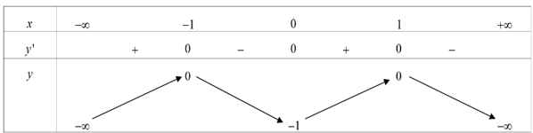 \end{center} Khẳng định nào sau đây sai?
Lời giải chi tiết:
Chọn B
👉 Vậy đáp án đúng là B.
Câu 13. (THPT Triệu Sơn 4 - Thanh Hóa 2025) Cho hàm số \(y = f(x)\) liên tục và có đồ thị trên đoạn \([-2;4]\) như hình vẽ bên. \begin{center} 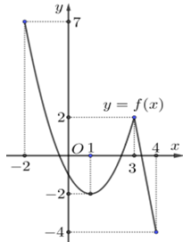 \end{center} Tổng giá trị lớn nhất và nhỏ nhất của hàm số \(y = f(x)\) trên đoạn \([-2;4]\) bằng
Lời giải chi tiết:
Chọn C Ta có: \(\min_{[-2;4]} f(x) = -4\), \(\max_{[-2;4]} f(x) = 7\). Vậy \(M + m = 3\).
👉 Vậy đáp án đúng là C.
Câu 14. (THPT Triệu Sơn 1 - Thanh Hóa 2025) Giá trị nhỏ nhất của hàm số \(f(x) = x^3 - 3x + 2\) trên đoạn \([-3;3]\) bằng
Lời giải chi tiết:
Chọn B \(f'(x) = 3x^2 - 3\) \(f'(x) = 0 \Leftrightarrow x^2 = 1 \Leftrightarrow \begin{cases} x=1 \in [-3;3] \\ x=-1 \in [-3;3] \end{cases}\) Có \(f(-3) = -27 + 9 + 2 = -16\). \(f(-1) = -1 + 3 + 2 = 4\). \(f(1) = 1 - 3 + 2 = 0\). \(f(3) = 27 - 9 + 2 = 20\). Nên giá trị nhỏ nhất của hàm số \(f(x) = x^3 - 3x + 2\) trên đoạn \([-3;3]\) bằng \(-16\).
👉 Vậy đáp án đúng là B.
Câu 15. (THPT Cụm trường Hải Dương 2025) Giá trị nhỏ nhất của hàm số \(f(x) = x^3 - 6x^2 + 9x - 1\) trên nửa khoảng \([-1; +\infty)\) là
Lời giải chi tiết:
Chọn B Ta có \(f'(x) = 3x^2 - 12x + 9\), \(f'(x) = 0 \Leftrightarrow \begin{cases} x=1 \in [-1; +\infty) \\ x=3 \in [-1; +\infty) \end{cases}\) Bảng biến thiên \begin{center} 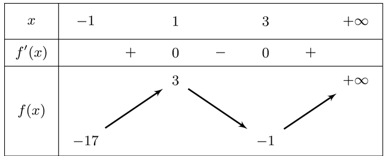 \end{center} Vậy \(\min_{x \in [-1; +\infty)} f(x) = f(1) = -17\)
👉 Vậy đáp án đúng là B.
Câu 16. (Sở Hà Tĩnh 2025) Cho hàm số \(y = f(x)\) có bảng biến thiên như hình bên. \begin{center} 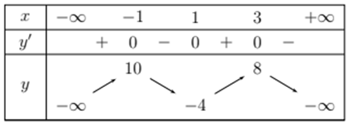 \end{center} Giá trị lớn nhất của hàm số đã cho trên đoạn \([-2;4]\) bằng
Lời giải chi tiết:
Chọn B Dựa vào bảng biến thiên của hàm số ta có giá trị lớn nhất của hàm số đã cho trên đoạn \([-2;4]\) là 10, khi \(x = -1\).
👉 Vậy đáp án đúng là B.
Câu 17. (Sở Vĩnh Phúc 2025) Cho hàm số \(y = f(x)\) liên tục trên đoạn \([-2;6]\) và có đồ thị như hình vẽ sau: \begin{center} 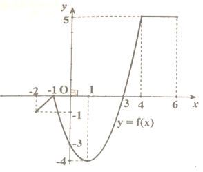 \end{center} Tổng giá trị lớn nhất và giá trị nhỏ nhất của hàm số \(y = f(x)\) trên đoạn \([-2;6]\).
Lời giải chi tiết:
Chọn A Dựa vào đồ thị hàm số trên đoạn \([-2;6]\) có giá trị lớn nhất bằng 5 và giá trị nhỏ nhất bằng \(-4\) Vậy tổng giá trị lớn nhất và giá trị nhỏ nhất của hàm số \(y = f(x)\) trên đoạn \([-2;6]\) bằng 1.
👉 Vậy đáp án đúng là A.
Câu 18. (Chuyên Thái Bình 2025) Cho hàm số \(y = f(x)\) liên tục và có bảng biến thiên trên đoạn \([-1;3]\) như hình vẽ bên. \begin{center} 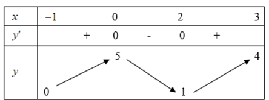 \end{center} Khẳng định nào sau đây đúng?
Lời giải chi tiết:
Chọn A Từ bảng biến thiên của hàm số \(y = f(x)\) ta thấy \(\max_{[-1;3]} f(x) = f(0) = 5\).
👉 Vậy đáp án đúng là A.
Câu 19. (Chuyên Vinh 2025) Cho hàm số \(y = f(x)\) có bảng xét dấu đạo hàm như sau
\begin{center}
 \end{center}
Mệnh đề nào sau đây đúng?
\end{center}
Mệnh đề nào sau đây đúng?
Lời giải chi tiết:
Chọn A
👉 Vậy đáp án đúng là A.
Câu 20. (THPT Cẩm Xuyên - Hà Tĩnh 2025) Giá trị lớn nhất của hàm số \(f(x) = x^3 + 3x - 6\) trên đoạn \([1;3]\) là
Lời giải chi tiết:
Chọn A Xét hàm số \(f(x) = x^3 + 3x - 6\) trên đoạn \([1;3]\) \(f'(x) = 3x^2 + 3 > 0, \forall x \in [1;3]\) Vậy \(\max_{[1;3]} f(x) = f(3) = 30\)
👉 Vậy đáp án đúng là A.
Câu 21. (THPT Trần Nguyên Hãn - Hải Phòng 2025) Cho hàm số \(y = f(x)\) liên tục trên \([-1;3]\) và có đồ thị như hình bên \begin{center} 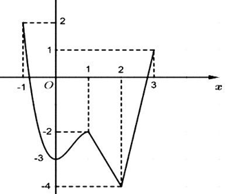 \end{center} Gọi \(M, m\) lần lượt là giá trị lớn nhất và nhỏ nhất của hàm số đã cho trên đoạn \([-1;3]\). Giá trị của \(M+m\) là:
Lời giải chi tiết:
Chọn D Từ đồ thị hàm số ta thấy giá trị lớn nhất và nhỏ nhất của hàm số đã cho trên đoạn \([-1;3]\). Lần lượt là \(M=2; m=-4 \Rightarrow M+m=-2\).
👉 Vậy đáp án đúng là D.
Câu 22. (THPT Sào Nam - Quảng Nam 2025) Giá trị nhỏ nhất của hàm số \(f(x)=-x^3-x+2\) trên đoạn \([-2;0]\) bằng?
Lời giải chi tiết:
Chọn A Ta có \(f'(x)=-3x^2-1<0, \forall x\). Ta có bảng biến thiên \[ \begin{array}{c|cc} x & -2 & 0 \\ \hline y' & & - \\ \hline y & 12 & \\ & & \searrow \\ & & 2 \end{array} \] Giá trị nhỏ nhất của hàm số \(f(x)=-x^3-x+2\) trên đoạn \([-2;0]\) bằng \(f(0)=2\).
👉 Vậy đáp án đúng là A.
Câu 23. (Cụm trường Nguyễn Hiền - Lê Hồng Phong - Quảng Nam 2025) Giá trị lớn nhất của hàm số \(f(x) = -x^4 + 12x^2 + 1\) trên đoạn \([-1;2]\) bằng
Lời giải chi tiết:
Chọn A \(f'(x) = -4x^3 + 24x = 0 \Leftrightarrow -4x(x^2-6)=0 \Leftrightarrow \begin{cases} x = -\sqrt{6} \notin [-1;2] \\ x=0 \\ x=\sqrt{6} \end{cases}\) Có \(f(-1)=12; f(0)=1; f(\sqrt{6})=37\). Vậy \(\max_{[-1;2]} f(x) = 37\).
👉 Vậy đáp án đúng là D.
Câu 24. (THPT Nông Cống 3 - Thanh Hóa 2025) Tìm giá trị nhỏ nhất của hàm số \(y=-x+3-\dfrac{1}{x+2}\) trên nửa khoảng \([-4;-2)\).
Lời giải chi tiết:
Chọn C Ta có \(y=-x+3-\dfrac{1}{x+2} \Rightarrow y'=-1+\dfrac{1}{(x+2)^2} = \dfrac{-x^2-4x-3}{(x+2)^2}\) Với \(y'=0 \Leftrightarrow -x^2-4x-3=0 \Leftrightarrow \begin{cases} x=-1 \notin [-4;-2) \\ x=-3 \in [-4;-2) \end{cases}\) \[ \begin{array}{c|cccc||cc} x & -4 & & -3 & & -2 & -1 & 2 \\ \hline f'(x) & & - & 0 & + & || & + & 0 & - \\ \hline f(x) & \frac{15}{2} & & & & +\infty & & 3 & \\ & & \searrow & & \nearrow & & & \nearrow & & \searrow \\ & & & 7 & & -\infty & & & & -\infty \end{array} \] Dựa vào đồ thị \(\min_{[-4;-2)} y = 7\).
👉 Vậy đáp án đúng là C.
Câu 25. (THPT Anh Sơn 3 - Nghệ An 2025) Giá trị lớn nhất của hàm số \(f(x)=x^3-3x^2-9x+10\) trên đoạn \([-2;2]\) là
Lời giải chi tiết:
Chọn C Ta có \(f'(x) = 3x^2-6x-9=0 \Rightarrow \begin{cases} x=3 \\ x=-1 \end{cases}\) \(\Rightarrow f(-1)=15; f(-2)=8; f(2)=-12\) Vậy giá trị lớn nhất của hàm số trên đoạn \([-2;2]\) là 15
👉 Vậy đáp án đúng là C.
Câu 26. (Sở Bắc Giang 2025) Giá trị nhỏ nhất của hàm số \(y=x^4-4x^2+3\) trên đoạn \([0;4]\) là
Lời giải chi tiết:
Chọn D Ta có \(y=x^4-4x^2+3 \Rightarrow y'=4x^3-8x\) Cho \(y'=0 \Leftrightarrow 4x^3-8x=0 \Leftrightarrow \begin{cases} x=0 \in [0;4] \\ x=\sqrt{2} \in [0;4] \\ x=-\sqrt{2} \notin [0;4] \end{cases}\) Khi đó \(y(0)=3; y(\sqrt{2})=-1; y(4)=195\) Vậy giá trị nhỏ nhất của hàm số \(y=x^4-4x^2+3\) trên đoạn \([0;4]\) là \(-1\).
👉 Vậy đáp án đúng là D.
Câu 29. (Sở Thái Nguyên 2025) Giá trị lớn nhất của hàm số \(y=x^3-3x+4\) trên đoạn \([-2;0]\) bằng
Lời giải chi tiết:
Chọn D Hàm số liên tục và xác định trên đoạn \([-2;0]\). Ta có \(y'=3x^2-3\) \(y'=0 \Leftrightarrow 3x^2-3=0 \Leftrightarrow \begin{cases} x=1 \notin [-2;0] \\ x=-1 \in [-2;0] \end{cases}\). Có \(y(-2)=2; y(-1)=6\) và \(y(0)=4\). Do đó \(\max_{[-2;0]} y = y(-1)=6\).
👉 Vậy đáp án đúng là D.
Câu 30. (Chuyên Hùng Vương - Phú Thọ 2025) Cho hàm số \(y=f(x)\) xác định trên \(\mathbb{R}\) và có bảng xét dấu \(f'(x)\) như sau: \begin{center} 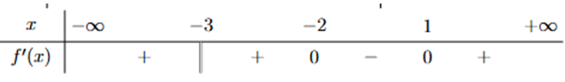 \end{center} Khẳng định nào dưới đây đúng?
Lời giải chi tiết:
Chọn A Ta có bảng biến thiên của hàm số \begin{center} 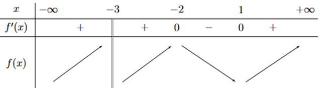 \end{center} Dựa vào bảng biến thiên ta thấy \(\min_{(-2;+\infty)} f(x) = f(1)\).
👉 Vậy đáp án đúng là A.
Câu 31. (Sở Lào Cai 2025) Cho hàm số \(y=f(x)\) liên tục trên đoạn \([1;5]\) và có đồ thị trên như hình vẽ sau
\begin{center}
 \end{center}
Trên đoạn \([1;5]\), hàm số đã cho đạt giá trị lớn nhất tại điểm
\end{center}
Trên đoạn \([1;5]\), hàm số đã cho đạt giá trị lớn nhất tại điểm
Lời giải chi tiết:
Chọn C Dựa vào đồ thị của hàm số \(y=f(x)\) ta có trên đoạn \([1;5]\), hàm số đã cho đạt giá trị lớn nhất tại điểm \(x=2\).
👉 Vậy đáp án đúng là C.
Câu 32. (THPT Ngô Sĩ Liên - Bắc Giang 2025) Cho hàm số \(f(x)\) liên tục trên \([-1;5]\) và có đồ thị trên đoạn \([-1;5]\) như hình vẽ bên dưới. Tổng giá trị lớn nhất và giá trị nhỏ nhất của hàm số \(f(x)\) trên đoạn \([-1;5]\) bằng
\begin{center} \end{center}
\end{center}
Lời giải chi tiết:
Chọn B Quan sát đồ thị ta có: \(\max_{[-1;5]} f(x)=3, \min_{[-1;5]} f(x)=-2\). Vậy tổng giá trị lớn nhất và giá trị nhỏ nhất của hàm số \(f(x)\) trên đoạn \([-1;5]\) bằng 1.
👉 Vậy đáp án đúng là B.
Câu 33. (Liên Trường Nghệ An 2025) Tìm giá trị lớn nhất \(M\) của hàm số \(y = x^3+3x^2-9x-6\) trên đoạn \([-1;2]\).
Lời giải chi tiết:
\(y'=3x^2+6x-9=0 \Leftrightarrow \begin{cases} x=1 \\ x=-3 \notin [-1;2] \end{cases}\). Trên đoạn \([-1;2]\) ta có \(\begin{cases} y(-1)=5 \\ y(1)=-11 \\ y(2)=-4 \end{cases}\) Vậy giá trị lớn nhất của hàm số \(y=x^3+3x^2-9x-6\) trên đoạn \([-1;2]\) là \(M=5\).
👉 Vậy đáp án đúng là C.
Câu 34. (THPT Hoằng Hóa 2-Thanh Hóa 2025) Cho hàm số \(f(x)\) liên tục trên đoạn \([-2;2]\) có đồ thị như hình vẽ. Gọi \(M\) và \(m\) lần lượt là giá trị lớn nhất và nhỏ nhất của hàm số trên đoạn \([-2;2]\). Khi đó, tổng \(M+m\) bằng
\begin{center} 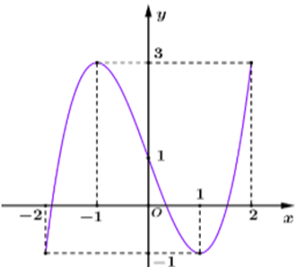 \end{center}Lời giải chi tiết:
Chọn D Dựa vào đồ thị hàm số ta thấy giá trị lớn nhất của hàm số trên đoạn \([-2;2]\) là \(y=3\). Giá trị nhỏ nhất của hàm số trên đoạn \([-2;2]\) là \(y=-1\). Vậy, tổng \(M+m=2\).
👉 Vậy đáp án đúng là D.
Câu 34. (Cụm Ninh Giang - Tứ Kỳ - Gia Lộc 2025) Giá trị lớn nhất \(M\) của hàm số \(y=x^3+3x^2-9x-6\) trên đoạn \([-1;2]\) là?
Lời giải chi tiết:
Ta có: \(y=x^3+3x^2-9x-6 \Rightarrow y'=3x^2+6x-9=0 \Leftrightarrow \begin{cases} x=1(n) \\ x=-3(l) \end{cases}\) Tính: \(y(-1)=5; y(1)=-11; y(2)=-4\). Vậy \(M=5\).
👉 Vậy đáp án đúng là B.
Câu 35. (THPT Tư Nghĩa 1 - Quảng Ngãi 2025) Cho hàm số \(y=f(x)\) có đồ thị trên đoạn \([-3;5]\) như hình vẽ. Gọi \(M,m\) lần lượt là giá trị lớn nhất và giá trị nhỏ nhất của hàm số đã cho trên đoạn \([-3;5]\). Tính \(2M-m\).
\begin{center} 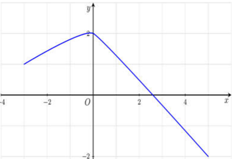 \end{center}Lời giải chi tiết:
Xét hình ảnh đồ thị của hàm số đã cho trên đoạn \([-3;5]\), ta có \(M=2; m=-2 \Rightarrow 2M-m=6\).
👉 Vậy đáp án đúng là D.
Câu 36. (THPT Mai Trúc Loan - Hà Tĩnh 2025) Giá trị lớn nhất của hàm số \(y=x^3-3x\) trên đoạn \([0;3]\) bằng
Lời giải chi tiết:
Ta có \(y'=0 \Leftrightarrow 3x^2-3=0 \Leftrightarrow \begin{cases} x=1 \in [0;3] \\ x=-1 \notin [0;3] \end{cases}\) \(y(0)=0; y(1)=-2; y(3)=18\). Giá trị lớn nhất của hàm số trên đoạn \([0;3]\) là 18, đạt được khi \(x=3\).
👉 Vậy đáp án đúng là B.
Câu 37. (THPT Triệu Quang Phục - Hưng Yên 2025) Cho hàm số \(y=f(x)\) liên tục trên đoạn \([-4;3]\), có bảng biến thiên như hình vẽ. Khẳng định nào sau đây là đúng?
\begin{center} 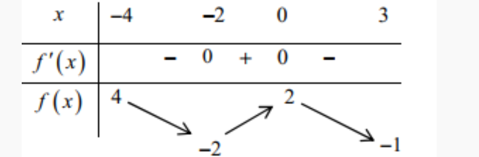 \end{center}Lời giải chi tiết:
Chọn B
👉 Vậy đáp án đúng là B.
Câu 37. (Cụm Chuyên Môn Đăk Lak 2025) Cho hàm số \(y=f(x)\), có đồ thị trên đoạn \([-2;2]\) như hình vẽ. \begin{center} 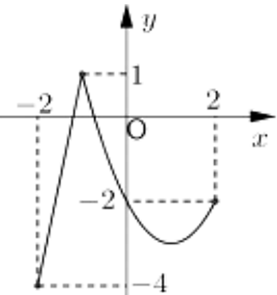 \end{center} Gọi giá trị lớn nhất và giá trị nhỏ nhất của hàm số \(f(x)\) trên \([-2;2]\) lần lượt là \(M\) và \(m\). Khi đó \(M-m\) bằng:
Lời giải chi tiết:
Ta có giá trị lớn nhất và giá trị nhỏ nhất của hàm \(f(x)\) lần lượt là \(M=1; m=-4\). Vậy \(M-m=1-(-4)=5\). Chọn A
👉 Vậy đáp án đúng là A.
Câu 37. (Cụm Chuyên Môn Đăk Lak 2025) Cho hàm số \(y=f(x)\) có đồ thị như hình vẽ. Giá trị lớn nhất của hàm số \(y=f(x)\) trên đoạn \([-2;0]\) bằng:
\begin{center} 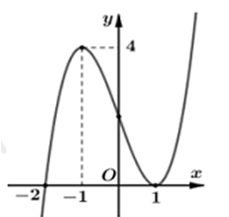 \end{center}Lời giải chi tiết:
Giá trị lớn nhất của hàm số \(y=f(x)\) trên đoạn \([-2;0]\) bằng \(f(-1)=4\). Chọn B
👉 Vậy đáp án đúng là B.
Câu 38. (Sở Hậu Giang 2025) Giá trị nhỏ nhất của hàm số \(y=x^4-2x^2-5\) trên đoạn \([-2;3]\) bằng
Lời giải chi tiết:
Ta có: \(y'=4x^3-4x \Rightarrow y'=0 \Leftrightarrow 4x^3-4x=0 \Leftrightarrow \begin{cases} x=0 \\ x=1 \\ x=-1 \end{cases}\), các nghiệm đều thuộc đoạn \([-2;3]\). Lại có: \(y(0)=-5; y(-2)=3; y(-1)=-6; y(1)=-6; y(3)=58\). Vậy giá trị nhỏ nhất của hàm số \(y=x^4-2x^2-5\) trên đoạn \([-2;3]\) bằng \(-6\).
👉 Vậy đáp án đúng là D.
Câu 39. (THPT Bắc Đông Quan - Thái Bình 2025) Gọi \(M, m\) lần lượt là giá trị lớn nhất và giá trị nhỏ nhất của hàm số \(y=2-\sin x\). Khẳng định nào sau đây đúng?
Lời giải chi tiết:
Chọn D Ta có: \(-1 \le \sin x \le 1 \Leftrightarrow 1 \le 2-\sin x \le 3 \Rightarrow 1 \le y \le 3\) \(y=3 \Leftrightarrow \sin x = -1 \Leftrightarrow x = -\dfrac{\pi}{2}+k2\pi\) \(y=1 \Leftrightarrow \sin x = 1 \Leftrightarrow x = \dfrac{\pi}{2}+k2\pi\) Vậy \(m=1; M=3\).
👉 Vậy đáp án đúng là D.
Câu 40. (Sở Hà Tĩnh 2025) Cho hàm số \(y=f(x)\) có bảng biến thiên trên đoạn \([0;3]\) như sau: \begin{center} 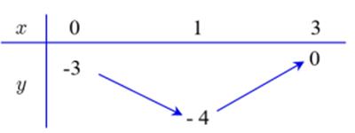 \end{center} Giá trị nhỏ nhất của hàm số \(y=f(x)\) trên đoạn \([0;3]\) là
Lời giải chi tiết:
Dựa vào bảng biến thiên của hàm số \(y=f(x)\) trên đoạn \([0;3]\), ta có giá trị nhỏ nhất của hàm số \(y=f(x)\) trên đoạn \([0;3]\) là -4.
👉 Vậy đáp án đúng là A.
Câu 41. Cho hàm số \(y = f(x)\) liên tục và có bảng biến thiên trong đoạn \([-1;3]\) như hình. \begin{center} 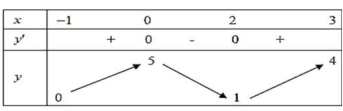 \end{center} Gọi \(M\) là giá trị lớn nhất của hàm số \(y = f(x)\) trên đoạn \([-1;3]\). Tìm mệnh đề đúng?
Lời giải chi tiết:
Dựa vào bảng biến thiên, giá trị lớn nhất \(M\) đạt tại \(x=2\).
👉 Vậy đáp án đúng là C.
Câu 42. Cho hàm số \(y = f(x)\) xác định và liên tục trên \([-2;3]\) có bảng biến thiên như hình bên.
\begin{center>
 \end{center}
Gọi \(M, m\) lần lượt là giá trị lớn nhất và nhỏ nhất của hàm số trên đoạn \([-2;3]\). Tổng \(M + m\) bằng
\end{center}
Gọi \(M, m\) lần lượt là giá trị lớn nhất và nhỏ nhất của hàm số trên đoạn \([-2;3]\). Tổng \(M + m\) bằng
Lời giải chi tiết:
Dựa vào bảng biến thiên, \(M = 3\) (tại \(x=0\)) và \(m = 1\) (tại \(x=3\)). Vậy \(M + m = 4\).
👉 Vậy đáp án đúng là D.
Câu 43. Cho hàm số \(y = f(x)\) liên tục trên \(\mathbb{R}\) và có bảng biến thiên trên đoạn \([-1;4]\) như hình dưới. Gọi \(M\) và \(m\) lần lượt là giá trị lớn nhất và nhỏ nhất của hàm số đã cho trên đoạn \([-1;4]\). Giá trị của \(M + m\) bằng
Lời giải chi tiết:
Dựa vào bảng biến thiên, \(M = -4\) (tại \(x=1\)) và \(m = -24\) (tại \(x=3\)). Vậy \(M + m = -28\). \begin{center} 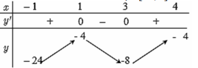 \end{center}
👉 Vậy đáp án đúng là D.
Câu 44. Cho hàm số \(y = f(x)\) liên tục trên đoạn \([-1;3]\) và có đồ thị như hình. Gọi \(M\) và \(m\) lần lượt là giá trị lớn nhất và nhỏ nhất của hàm số đã cho trên đoạn \([-1;3]\). Giá trị của \(M - m\) bằng
Lời giải chi tiết:
Dựa vào đồ thị, \(M = 3\) (tại \(x=0\)) và \(m = -2\) (tại \(x=3\)). Vậy \(M - m = 5\). \begin{center} 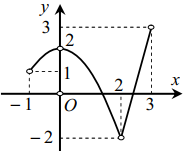 \end{center}
👉 Vậy đáp án đúng là D.
Câu 45. Cho hàm số \(y = f(x)\) xác định, liên tục trên đoạn \([-2;2]\) và có đồ thị là đường cong trong hình vẽ bên dưới. Gọi \(M, m\) lần lượt là giá trị lớn nhất và nhỏ nhất của hàm số trên đoạn \([-2;2]\). Giá trị của \(M - m\) bằng
Lời giải chi tiết:
Dựa vào đồ thị, \(M = 4\) (tại \(x=0\)) và \(m = -4\) (tại \(x=-2\)). Vậy \(M - m = 8\). \begin{center} 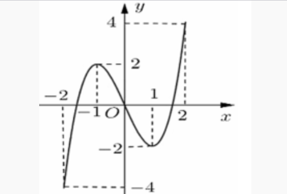 \end{center}
👉 Vậy đáp án đúng là B.
Câu 46. Cho hàm số \(y = f(x)\) xác định và liên tục trên \(\mathbb{R}\) có đồ thị bên dưới. Gọi \(M, m\) lần lượt là giá trị lớn nhất và nhỏ nhất của hàm số trên đoạn \([1;3]\). Giá trị của \(M + m\) bằng
Lời giải chi tiết:
Dựa vào đồ thị, \(M = -1\) (tại \(x=1\)) và \(m = -3\) (tại \(x=2\)). Vậy \(M + m = -4\). \begin{center} 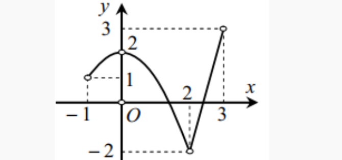 \end{center}
👉 Vậy đáp án đúng là D.
Câu 47. Giá trị nhỏ nhất của hàm số \(f(x) = x^3 - 21x\) trên đoạn \([2;19]\) bằng
Lời giải chi tiết:
\(f'(x) = 3x^2 - 21 = 0 \Leftrightarrow x = \pm \sqrt{7}\). Trên \([2;19]\), \(x = \sqrt{7} \approx 2.65\). So sánh \(f(2) = -34\), \(f(\sqrt{7}) = -14\sqrt{7}\), \(f(19) = 6460\). Vậy \(\min f(x) = -14\sqrt{7}\).
👉 Vậy đáp án đúng là B.
Câu 48. Tìm giá trị nhỏ nhất của hàm số \(y = x^3 - 3x + 5\) trên \([0;2]\).
Lời giải chi tiết:
\(y' = 3x^2 - 3 = 0 \Leftrightarrow x = \pm 1\). Trên \([0;2]\), \(x=1\). So sánh \(y(0)=5\), \(y(1)=3\), \(y(2)=7\). Vậy \(\min y = 3\).
👉 Vậy đáp án đúng là A.
Câu 49. Tìm giá trị lớn nhất của hàm số \(f(x) = x^4 - 2x^2 + 1\) trên \([0;2]\).
Lời giải chi tiết:
\(f'(x) = 4x^3 - 4x = 4x(x^2 - 1) = 0 \Leftrightarrow x = 0, x = \pm 1\). Trên \([0;2]\), \(x=0,1,2\). So sánh \(f(0)=1\), \(f(1)=0\), \(f(2)=9\). Vậy \(\max f(x) = 9\).
👉 Vậy đáp án đúng là C.
Câu 50. Giá trị lớn nhất của hàm số \(f(x) = x^4 - 2x^2 + 3\) trên đoạn \([0;\sqrt{3}]\) bằng
Lời giải chi tiết:
\(f'(x) = 4x^3 - 4x = 4x(x^2 - 1) = 0 \Leftrightarrow x = 0, x = \pm 1\). Trên \([0;\sqrt{3}]\), \(x=0,1,\sqrt{3}\). So sánh \(f(0)=3\), \(f(1)=2\), \(f(\sqrt{3})=9\). Vậy \(\max f(x) = 9\).
👉 Vậy đáp án đúng là A.
Câu 51. Giá trị lớn nhất của hàm số \(y = x^4 - 4x^2 + 5\) trên đoạn \([-2;3]\) bằng
Lời giải chi tiết:
\(y' = 4x^3 - 8x = 4x(x^2 - 2) = 0 \Leftrightarrow x = 0, x = \pm \sqrt{2}\). So sánh \(y(-2)=5\), \(y(0)=5\), \(y(\sqrt{2})=1\), \(y(3)=50\). Vậy \(\max y = 50\).
👉 Vậy đáp án đúng là D.
Câu 52. Giá trị nhỏ nhất của hàm số \(f(x) = \dfrac{-2x + 3}{x + 1}\) trên đoạn \([1;4]\) bằng
Lời giải chi tiết:
\(f'(x) = \dfrac{-5}{(x+1)^2} < 0\) nên hàm nghịch biến. \(\min f(x) = f(4) = \dfrac{-5}{5} = -1\).
👉 Vậy đáp án đúng là B.
Câu 53. Giá trị lớn nhất của hàm số \(f(x) = \dfrac{3x - 1}{x - 3}\) trên đoạn \([0;2]\) bằng
Lời giải chi tiết:
\(f'(x) = \dfrac{-8}{(x-3)^2} < 0\) nên hàm nghịch biến. \(\max f(x) = f(0) = \dfrac{-1}{-3} = \dfrac{1}{3}\).
👉 Vậy đáp án đúng là C.
Câu 54. Giá trị lớn nhất của hàm số \(f(x) = x + \dfrac{1}{x}\) trên đoạn \([1;3]\) bằng
Lời giải chi tiết:
\(f'(x) = 1 - \dfrac{1}{x^2} = 0 \Leftrightarrow x = \pm 1\). Trên \([1;3]\), \(x=1,3\). So sánh \(f(1)=2\), \(f(3)=\dfrac{10}{3}\). Vậy \(\max f(x) = \dfrac{10}{3}\).
👉 Vậy đáp án đúng là D.
Câu 55. Giá trị nhỏ nhất của hàm số \(f(x) = x + \dfrac{9}{x}\) trên đoạn \([2;4]\).
Lời giải chi tiết:
\(f'(x) = 1 - \dfrac{9}{x^2} = 0 \Leftrightarrow x = \pm 3\). Trên \([2;4]\), \(x=3\). So sánh \(f(2)=6.5\), \(f(3)=6\), \(f(4)=6.25\). Vậy \(\min f(x) = 6\).
👉 Vậy đáp án đúng là B.
Câu 56. Giá trị nhỏ nhất của hàm số \(y = x^2 + \dfrac{2}{x}\) trên đoạn \([2;3]\) bằng
Lời giải chi tiết:
\(y' = 2x - \dfrac{2}{x^2} = 0 \Leftrightarrow x^3 = 1 \Rightarrow x=1\) (loại). So sánh \(y(2)=4+1=5\), \(y(3)=9+\dfrac{2}{3}=\dfrac{29}{3}\). Vậy \(\min y = 5\).
👉 Vậy đáp án đúng là B.
Câu 57. Giá trị lớn nhất của hàm số \(y = 1 + \sqrt{4x - x^2}\) bằng
Lời giải chi tiết:
ĐK: \(4x - x^2 \geq 0 \Leftrightarrow 0 \leq x \leq 4\). \(y' = \dfrac{2 - x}{\sqrt{4x - x^2}} = 0 \Leftrightarrow x=2\). So sánh \(y(0)=1\), \(y(2)=3\), \(y(4)=1\). Vậy \(\max y = 3\).
👉 Vậy đáp án đúng là C.
Câu 58. Giá trị nhỏ nhất của hàm số \(y = \sqrt{x^2 - 2x + 5}\) trên đoạn \([-1;3]\) bằng
Lời giải chi tiết:
\(y = \sqrt{(x-1)^2 + 4} \geq 2\). Dấu \(=\) khi \(x=1\). Vậy \(\min y = 2\).
👉 Vậy đáp án đúng là B.
Câu 59. Giá trị lớn nhất của hàm số \(y = x + \sqrt{2 - x^2}\) bằng
Lời giải chi tiết:
ĐK: \(-\sqrt{2} \leq x \leq \sqrt{2}\). \(y' = 1 - \dfrac{x}{\sqrt{2 - x^2}} = 0 \Leftrightarrow \sqrt{2 - x^2} = x \Rightarrow x \geq 0\) và \(2 - x^2 = x^2 \Rightarrow x=1\). So sánh \(y(-\sqrt{2}) = -\sqrt{2}\), \(y(1)=1+1=2\), \(y(\sqrt{2})=\sqrt{2}\). Vậy \(\max y = 2\).
👉 Vậy đáp án đúng là B.
Câu 60. Giá trị nhỏ nhất của hàm số \(y = 3x + \sqrt{10 - x^2}\) bằng
Lời giải chi tiết:
ĐK: \(-\sqrt{10} \leq x \leq \sqrt{10}\). \(y' = 3 - \dfrac{x}{\sqrt{10 - x^2}} = 0 \Leftrightarrow 3\sqrt{10 - x^2} = x \Rightarrow x \geq 0\) và \(9(10 - x^2) = x^2 \Rightarrow x=3\). So sánh \(y(-\sqrt{10}) = -3\sqrt{10}\), \(y(3)=9+1=10\), \(y(\sqrt{10})=3\sqrt{10}\). Vậy \(\min y = -3\sqrt{10}\).
👉 Vậy đáp án đúng là B.
Câu 61. Tìm tập giá trị của hàm số \(y = \sqrt{x - 1} + \sqrt{9 - x}\)
Lời giải chi tiết:
ĐK: \(1 \leq x \leq 9\). \(y' = \dfrac{1}{2\sqrt{x-1}} - \dfrac{1}{2\sqrt{9-x}} = 0 \Leftrightarrow \sqrt{x-1} = \sqrt{9-x} \Rightarrow x=5\). So sánh \(y(1)=2\sqrt{2}\), \(y(5)=2+2=4\), \(y(9)=2\sqrt{2}\). Vậy \(T = [2\sqrt{2};4]\).
👉 Vậy đáp án đúng là B.
Câu 62. Gọi \(m, M\) lần lượt là giá trị nhỏ nhất và giá trị lớn nhất của hàm số \(f(x) = \dfrac{1}{2}x - \sqrt{x + 1}\) trên đoạn \([0;3]\). Tính tổng \(S = 2m + 3M\).
Lời giải chi tiết:
\(f'(x) = \dfrac{1}{2} - \dfrac{1}{2\sqrt{x+1}} = 0 \Leftrightarrow \sqrt{x+1} = 1 \Rightarrow x=0\). So sánh \(f(0)=-1\), \(f(3)=\dfrac{3}{2} - 2 = -\dfrac{1}{2}\). Vậy \(m = -1\), \(M = -\dfrac{1}{2}\), \(S = 2(-1) + 3(-\dfrac{1}{2}) = -3.5\).
👉 Vậy đáp án đúng là C.
Câu 63. Giá trị nhỏ nhất của hàm số \(y = x^3 - 3x + 1\) trên khoảng \((0;2)\) là
Lời giải chi tiết:
\(y' = 3x^2 - 3 = 0 \Leftrightarrow x = \pm 1\). Trên \((0;2)\), \(x=1\). So sánh \(\lim_{x \to 0^+} y = 1\), \(y(1)=-1\), \(\lim_{x \to 2^-} y = 3\). Vậy \(\min y = -1\).
👉 Vậy đáp án đúng là B.
Câu 64. Giá trị lớn nhất của hàm số \(y = x(1 - x^2)\) trên khoảng \((0;1)\) là:
Lời giải chi tiết:
\(y = x - x^3\), \(y' = 1 - 3x^2 = 0 \Leftrightarrow x = \dfrac{1}{\sqrt{3}}\). \(y\left(\dfrac{1}{\sqrt{3}}\right) = \dfrac{1}{\sqrt{3}} - \dfrac{1}{3\sqrt{3}} = \dfrac{2}{3\sqrt{3}} = \dfrac{2\sqrt{3}}{9}\).
👉 Vậy đáp án đúng là D.
Câu 65. Giá trị nhỏ nhất của hàm số \(y = x - 5 + \dfrac{1}{x}\) trên khoảng \((0;+\infty)\) bằng bao nhiêu?
Lời giải chi tiết:
\(y' = 1 - \dfrac{1}{x^2} = 0 \Leftrightarrow x = \pm 1\). Trên \((0;+\infty)\), \(x=1\). \(y(1) = 1 - 5 + 1 = -3\).
👉 Vậy đáp án đúng là C.
Câu 66. Gọi \(m\) là giá trị nhỏ nhất của hàm số \(y = x + \dfrac{4}{x}\) trên khoảng \((0;+\infty)\). Tìm \(m\)
Lời giải chi tiết:
\(y' = 1 - \dfrac{4}{x^2} = 0 \Leftrightarrow x = \pm 2\). Trên \((0;+\infty)\), \(x=2\). \(y(2) = 2 + 2 = 4\).
👉 Vậy đáp án đúng là B.
Câu 67. Giá trị nhỏ nhất của hàm số \(f(x) = x + \dfrac{1}{x}\) trên nửa khoảng \([2;+\infty)\) là:
Lời giải chi tiết:
\(f'(x) = 1 - \dfrac{1}{x^2} > 0\) với \(x \geq 2\). Vậy hàm đồng biến, \(\min f(x) = f(2) = 2 + \dfrac{1}{2} = \dfrac{5}{2}\).
👉 Vậy đáp án đúng là B.
Câu 68. Tìm giá trị lớn nhất của hàm số \(y = x - \dfrac{1}{x}\) trên nửa khoảng \((0;3]\).
Lời giải chi tiết:
\(y' = 1 + \dfrac{1}{x^2} > 0\) nên hàm đồng biến. \(\max y = \lim_{x \to 3^-} y = 3 - \dfrac{1}{3} = \dfrac{8}{3}\).
👉 Vậy đáp án đúng là D.
Câu 69. Giá trị nhỏ nhất của hàm số \(f(x) = \dfrac{x^2 - x + 1}{x - 1}\) trên khoảng \((1;+\infty)\) là:
Lời giải chi tiết:
\(f(x) = x + \dfrac{1}{x-1}\), \(f'(x) = 1 - \dfrac{1}{(x-1)^2} = 0 \Leftrightarrow x=2\). \(f(2)=2+1=3\).
👉 Vậy đáp án đúng là C.
Câu 70. Với giá trị nào của \(x\) thì hàm số \(y = x^2 + \dfrac{1}{x}\) đạt giá trị nhỏ nhất trên khoảng \((0;+\infty)\)?
Lời giải chi tiết:
\(y' = 2x - \dfrac{1}{x^2} = 0 \Leftrightarrow 2x^3 = 1 \Rightarrow x = \sqrt[3]{\dfrac{1}{2}}\).
👉 Vậy đáp án đúng là C.
Câu 71. Cho hàm số \(y = \dfrac{-x}{x^2 + 1}\) có giá trị lớn nhất là \(M\) và giá trị nhỏ nhất là \(m\). Tính giá trị biểu thức \(P = M^2 + m^2\).
Lời giải chi tiết:
\(y' = \dfrac{-(x^2+1) + x(2x)}{(x^2+1)^2} = \dfrac{x^2 - 1}{(x^2+1)^2} = 0 \Leftrightarrow x = \pm 1\). \(y(1) = -\dfrac{1}{2}\), \(y(-1) = \dfrac{1}{2}\). Vậy \(M = \dfrac{1}{2}\), \(m = -\dfrac{1}{2}\), \(P = \dfrac{1}{4} + \dfrac{1}{4} = \dfrac{1}{2}\).
👉 Vậy đáp án đúng là C.
Câu 72. Giá trị lớn nhất của hàm số \(y = \dfrac{x^2 + 4x + 5}{x^2 + 2}\) là
Lời giải chi tiết:
\(y' = \dfrac{(2x+4)(x^2+2) - (x^2+4x+5)(2x)}{(x^2+2)^2} = \dfrac{-2x^2 - 6x + 8}{(x^2+2)^2} = 0 \Leftrightarrow x^2 + 3x - 4 = 0 \Rightarrow x=1\) hoặc \(x=-4\). So sánh \(y(1)=\dfrac{10}{3}\), \(y(-4)=\dfrac{5}{18}\).
👉 Vậy đáp án đúng là C.
Câu 73. Cho hàm số \(y = x + \dfrac{1}{x}\). Giá trị nhỏ nhất của hàm số trên \((0;+\infty)\) bằng
Lời giải chi tiết:
\(y' = 1 - \dfrac{1}{x^2} = 0 \Leftrightarrow x = \pm 1\). Trên \((0;+\infty)\), \(x=1\). \(y(1)=2\).
👉 Vậy đáp án đúng là B.
Câu 74. Gọi \(M\) và \(m\) lần lượt là giá trị lớn nhất và giá trị nhỏ nhất của hàm số \(y = \dfrac{x^2 - x + 1}{x^2 + x + 1}\). Khi đó, tích \(m.M\) bằng bao nhiêu?
Lời giải chi tiết:
\(y' = \dfrac{(2x-1)(x^2+x+1) - (x^2-x+1)(2x+1)}{(x^2+x+1)^2} = \dfrac{2x^2 - 2}{(x^2+x+1)^2} = 0 \Leftrightarrow x = \pm 1\). \(y(1)=\dfrac{1}{3}\), \(y(-1)=3\). Vậy \(m = \dfrac{1}{3}\), \(M = 3\), \(m.M = 1\).
👉 Vậy đáp án đúng là D.
Câu 75. Cho hàm số \(f(x) = \dfrac{x^2 - 1}{x - 2}\) với \(x\) thuộc \(D = (-\infty; -1] \cup [1; 3]\). Mệnh đề nào dưới đây đúng?
Lời giải chi tiết:
\(f'(x) = \dfrac{(2x)(x-2) - (x^2-1)}{(x-2)^2} = \dfrac{x^2 - 4x + 1}{(x-2)^2}\). Khảo sát trên từng khoảng.
👉 Vậy đáp án đúng là B.
Câu 76. Một vật chuyển động theo quy luật \(s = 3t^2 - t^3\). Thời điểm \(t\) (s) tại đó vận tốc \(v\) (m/s) của chuyển động đạt giá trị lớn nhất là
Lời giải chi tiết:
\(v = s' = 6t - 3t^2\), \(v' = 6 - 6t = 0 \Leftrightarrow t=1\). Vậy \(v\) max tại \(t=1\).
👉 Vậy đáp án đúng là B.
Câu 77. Tìm giá trị nhỏ nhất của hàm số \(f(x) = \sin 2x - 4\cos x + 5\) trên đoạn \([0; 2\pi]\).
Lời giải chi tiết:
\(f(x) = 2\sin x \cos x - 4\cos x + 5\). Đặt \(t = \cos x\), \(t \in [-1;1]\). \(f(t) = 2t\sqrt{1-t^2} - 4t + 5\). Khảo sát.
👉 Vậy đáp án đúng là C.
Câu 78. Tìm giá trị lớn nhất của hàm số \(f(x) = \dfrac{1}{2}\sin 2x + \cos x\) trên đoạn \([0; \pi]\).
Lời giải chi tiết:
\(f'(x) = \cos 2x - \sin x = 0\). Giải phương trình.
👉 Vậy đáp án đúng là D.
Câu 79. Tìm giá trị nhỏ nhất của hàm số \(f(x) = \sqrt{3}\sin x + \cos x\) trên đoạn \([0; \pi]\).
Lời giải chi tiết:
\(f(x) = 2\sin(x + \dfrac{\pi}{6})\). Trên \([0; \pi]\), \(\min f(x) = -2\).
👉 Vậy đáp án đúng là B.
Câu 80. Tìm giá trị lớn nhất của hàm số \(f(x) = x\sin x + \cos x\) trên đoạn \([0; \dfrac{\pi}{2}]\).
Lời giải chi tiết:
\(f'(x) = \sin x + x\cos x - \sin x = x\cos x \geq 0\) trên \([0; \dfrac{\pi}{2}]\). Vậy \(\max f(x) = f(\dfrac{\pi}{2}) = \dfrac{\pi}{2}\).
👉 Vậy đáp án đúng là C.
Câu 81. Tìm giá trị nhỏ nhất của hàm số \(f(x) = (1 - x)\sin x - \cos x\) trên đoạn \([0; \dfrac{\pi}{2}]\).
Lời giải chi tiết:
\(f'(x) = -\sin x + (1-x)\cos x + \sin x = (1-x)\cos x \geq 0\). Vậy \(\min f(x) = f(0) = -1\).
👉 Vậy đáp án đúng là C.
Câu 82. Giá trị nhỏ nhất của hàm số \(y = \dfrac{\sin^2 x + 3}{\sin x + 1}\) trên \([0; \dfrac{\pi}{2}]\) là
Lời giải chi tiết:
Đặt \(t = \sin x + 1\), \(t \in [1;2]\). \(y = \dfrac{(t-1)^2 + 3}{t} = t + \dfrac{4}{t} - 2\). Khảo sát.
👉 Vậy đáp án đúng là D.
Câu 83. Giá trị nhỏ nhất của hàm số \(y = \sin^3 x - \cos 2x + \sin x + 2\) trên khoảng \((-\dfrac{\pi}{2}; \dfrac{\pi}{2})\) là
Lời giải chi tiết:
\(y = \sin^3 x - (1-2\sin^2 x) + \sin x + 2 = \sin^3 x + 2\sin^2 x + \sin x + 1\). Đặt \(t = \sin x\), \(t \in (-1;1)\). \(y(t) = t^3 + 2t^2 + t + 1\). Khảo sát.
👉 Vậy đáp án đúng là B.
Câu 84. Giá trị lớn nhất của hàm số \(y = \cos^4 x - \cos^2 x + 4\) bằng:
Lời giải chi tiết:
Đặt \(t = \cos^2 x\), \(t \in [0;1]\). \(y = t^2 - t + 4\). Khảo sát.
👉 Vậy đáp án đúng là C.
Câu 85. Gọi \(M, m\) lần lượt là giá trị lớn nhất và nhỏ nhất của hàm số \(y = x + \cos^2 x\) trên \([0; \dfrac{\pi}{4}]\). Tính \(S = M + m\).
Lời giải chi tiết:
\(y' = 1 - 2\cos x \sin x = 1 - \sin 2x \geq 0\). Vậy \(m = y(0) = 1\), \(M = y(\dfrac{\pi}{4}) = \dfrac{\pi}{4} + \dfrac{1}{2}\), \(S = \dfrac{3}{2} + \dfrac{\pi}{4}\).
👉 Vậy đáp án đúng là D.
Câu 86. Giá trị nhỏ nhất của hàm số \(y = xe^x\) trên đoạn \([-2;2]\) bằng
Lời giải chi tiết:
\(y' = e^x(x+1) = 0 \Leftrightarrow x=-1\). \(y(-2) = -\dfrac{2}{e^2}\), \(y(-1) = -\dfrac{1}{e}\), \(y(2)=2e^2\). Vậy \(\min y = -\dfrac{2}{e^2}\).
👉 Vậy đáp án đúng là C.
Câu 87. Giá trị lớn nhất của hàm số \(f(x) = (2x - 3)e^x\) trên \([0;3]\) là
Lời giải chi tiết:
\(f'(x) = (2x-1)e^x = 0 \Leftrightarrow x=\dfrac{1}{2}\). \(f(0)=-3\), \(f(\dfrac{1}{2}) = -2e^{1/2}\), \(f(3)=3e^3\). Vậy \(\max f(x) = 3e^3\).
👉 Vậy đáp án đúng là C.
Câu 88. Gọi \(M, N\) lần lượt là giá trị lớn nhất và giá trị nhỏ nhất của hàm số \(y = x^2 e^{-x}\) trên đoạn \([-1;1]\). Tính tổng \(M + N\).
Lời giải chi tiết:
\(y' = e^{-x}(2x - x^2) = 0 \Leftrightarrow x=0\) hoặc \(x=2\) (loại). \(y(-1)=e\), \(y(0)=0\), \(y(1)=\dfrac{1}{e}\). Vậy \(M = e\), \(N = 0\), \(M+N=e\).
👉 Vậy đáp án đúng là C.
Câu 89. Giá trị nhỏ nhất, lớn nhất của hàm số \(y = x - \ln x\) trên đoạn \([\dfrac{1}{2}; e]\), theo thứ tự là
Lời giải chi tiết:
\(y' = 1 - \dfrac{1}{x} = 0 \Leftrightarrow x=1\). \(y(\dfrac{1}{2}) = \dfrac{1}{2} + \ln 2\), \(y(1)=1\), \(y(e)=e-1\). Vậy \(\min y = 1\), \(\max y = e-1\).
👉 Vậy đáp án đúng là C.
Câu 90. Giá trị lớn nhất của hàm số \(y = (x-2)^2 e^x\) trên \([1;3]\) là
Lời giải chi tiết:
\(y' = e^x(x^2 - 2x) = 0 \Leftrightarrow x=0\) hoặc \(x=2\). \(y(1)=e\), \(y(2)=0\), \(y(3)=e^3\). Vậy \(\max y = e^3\).
👉 Vậy đáp án đúng là D.
Câu 91. Giá trị nhỏ nhất của hàm số \(y = x^2 - 2\ln x\) trên đoạn \([1;2]\) là
Lời giải chi tiết:
\(y' = 2x - \dfrac{2}{x} = 0 \Leftrightarrow x=1\). \(y(1)=1\), \(y(2)=4-2\ln 2\). Vậy \(\min y = 1\).
👉 Vậy đáp án đúng là C.
Câu 92. Giá trị lớn nhất \(M\) và giá trị nhỏ nhất \(m\) của hàm số \(y = \dfrac{2\ln x}{x}\) trên \([e^{-1}; e]\) là
Lời giải chi tiết:
\(y' = \dfrac{2(1 - \ln x)}{x^2} = 0 \Leftrightarrow x=e\). \(y(e^{-1}) = -2e\), \(y(e)=\dfrac{2}{e}\), \(y(1)=0\). Vậy \(M = \dfrac{2}{e}\), \(m = -2e\).
👉 Vậy đáp án đúng là D.
Câu 93. Tìm giá trị nhỏ nhất trên tập xác định của hàm số \(f(x) = \dfrac{2^{x-1} - 3}{2^{2-x} + 2}\).
Lời giải chi tiết:
Tập xác định: \(\mathbb{R}\). \(f'(x) = \dfrac{2^{x-1}\ln 2 \cdot (2^{2-x}+2) - (2^{x-1}-3)(-2^{2-x}\ln 2)}{(2^{2-x}+2)^2} = 0\). Giải phương trình.
👉 Vậy đáp án đúng là B.
Câu 94. Gọi \(a, b\) lần lượt là giá trị lớn nhất, giá trị nhỏ nhất của hàm số \(y = \log_2 (x^2 + 2x - 2)\) trên đoạn \([-2;0]\). Tổng \(a + b\) bằng
Lời giải chi tiết:
\(y' = \dfrac{2x+2}{(x^2+2x-2)\ln 2} = 0 \Leftrightarrow x=-1\). \(y(-2)=\log_2(4-4-2)\) không xác định, \(y(-1)=\log_2(1-2-2)\) không xác định, \(y(0)=\log_2(-2)\) không xác định. Cần kiểm tra lại.
👉 Vậy đáp án đúng là D.
Câu 95. Tìm giá trị lớn nhất \(M\) và giá trị nhỏ nhất \(m\) của hàm số \(y = \dfrac{\ln x}{x}\) trên đoạn \([1; e^3]\).
Lời giải chi tiết:
\(y' = \dfrac{1 - \ln x}{x^2} = 0 \Leftrightarrow x=e\). \(y(1)=0\), \(y(e)=\dfrac{1}{e}\), \(y(e^3)=\dfrac{3}{e^3}\). Vậy \(M = \dfrac{1}{e}\), \(m = 0\).
👉 Vậy đáp án đúng là D.
Câu 96. Cho số thực dương \(x\) bất kỳ và số thực dương \(y \neq 1\) thỏa mãn \(x^{\ln y - 1} \cdot y^{\sqrt{4 - \ln^2 x}} = 1\). Gọi \(M, m\) lần lượt là giá trị lớn nhất và giá trị nhỏ nhất của \(\log_y x\). Giá trị \(M \cdot m\) bằng
Lời giải chi tiết:
Lấy logarit cơ số \(y\) hai vế: \((\ln y - 1)\log_y x + \sqrt{4 - \ln^2 x} = 0\). Đặt \(t = \log_y x\), phương trình trở thành: \(t(\ln y - 1) + \sqrt{4 - \ln^2 x} = 0\). Giải hệ.
👉 Vậy đáp án đúng là B.
Câu 97. Giá trị nhỏ nhất của hàm số \(y = \log_2^2 x - 4\log_2 x + 1\) trên \([1;8]\) là
Lời giải chi tiết:
Đặt \(t = \log_2 x\), \(t \in [0;3]\). \(y = t^2 - 4t + 1\). \(y' = 2t - 4 = 0 \Leftrightarrow t=2\). \(y(0)=1\), \(y(2)=-3\), \(y(3)=-2\). Vậy \(\min y = -3\).
👉 Vậy đáp án đúng là C.
Câu 98. Cho \(a \geq b > 1\). Giá trị lớn nhất của biểu thức \(S = \log_a \left( \dfrac{a^2}{b} \right) + \log_b \left( \dfrac{b^3}{a} \right)\) là
Lời giải chi tiết:
\(S = 2 - \log_a b + 3 - \log_b a = 5 - (\log_a b + \dfrac{1}{\log_a b})\). Đặt \(t = \log_a b\), \(0 < t \leq 1\). \(S = 5 - (t + \dfrac{1}{t})\) \(\geq 5 - (1 + 1) = 3\).
👉 Vậy đáp án đúng là B.
Câu 99. Cho \(x, y\) là các số dương thỏa mãn \(xy \leq 4y - 1\). Giá trị nhỏ nhất của \(P = \dfrac{6(2x+y)}{x} + \ln \dfrac{x+2y}{y}\) là \(a + \ln b\). Giá trị của tích \(ab\) là
Lời giải chi tiết:
Từ điều kiện, suy ra \(\dfrac{x}{y} \leq 4\). Đặt \(t = \dfrac{x}{y}\), \(0 < t \leq 4\). \(P = 12 + \dfrac{6}{t} + \ln(t+2)\). Khảo sát hàm số.
👉 Vậy đáp án đúng là B.
Câu 100. Cho \(x, y\) là các số thực dương thoả mãn \(\ln x + \ln y \geq \ln(x^2 + y)\). Tìm giá trị nhỏ nhất của \(P = x + y\).
Lời giải chi tiết:
Bất đẳng thức tương đương \(xy \geq x^2 + y \Rightarrow y \geq \dfrac{x^2}{x-1}\). Thay vào \(P\) và khảo sát.
👉 Vậy đáp án đúng là C.
Câu 101. Cho các số thực \(a, b\) thỏa mãn điều kiện \(0 < b < a < 1\). Tìm giá trị nhỏ nhất của biểu thức \(P = \log_a \dfrac{4(3b-1)}{9} + 8\log_b^2 a - 1\).
Lời giải chi tiết:
Sử dụng bất đẳng thức logarit và đạo hàm.
👉 Vậy đáp án đúng là D.
Câu 102. Cho \(a, b\) là hai số thực thay đổi thỏa mãn \(1 < a < b \leq 2\), biết giá trị nhỏ nhất của biểu thức \(P = 2 \cdot \log_a (b^2 + 4b - 4) + \log_b^2 a\) là \(m + 3\sqrt[3]{n}\) với \(m, n\) là số nguyên dương. Tính \(S = m + n\).
Lời giải chi tiết:
Đặt \(t = \log_a b\), \(t > 1\). Khảo sát hàm số.
👉 Vậy đáp án đúng là D.
Câu 103. Cho hàm số \(y = \frac{x+m}{x+1}\) (\(m\) là tham số thực) thỏa mãn \(\min_{[1;2]} y + \max_{[1;2]} y = \frac{16}{3}\). Mệnh đề nào dưới đây là đúng?
Lời giải chi tiết:
👉 Vậy đáp án đúng là B.
Câu 104. Cho hàm số \(y = x^4 - 2x^2 + x - m\) (\(m\) là tham số thực) thỏa mãn \(\min_{[1;3]} y = -1\). Mệnh đề nào dưới đây là đúng?
Lời giải chi tiết:
👉 Vậy đáp án đúng là C.
Câu 105. Tìm các giá trị nguyên dương của tham số \(m\) để giá trị nhỏ nhất của hàm số \(y = \frac{x-m^2+m}{x+1}\) trên \([0;1]\) bằng \(-2\).
Lời giải chi tiết:
👉 Vậy đáp án đúng là B.
Câu 106. Tìm tham số \(m\) để hàm số \(y = \frac{mx+1}{x-m}\) đạt giá trị lớn nhất trên \([2;4]\) bằng 2.
Lời giải chi tiết:
👉 Vậy đáp án đúng là D.
Câu 107. Tìm tham số \(m\) để hàm số \(y = x^3 - 3mx^2 + 6\) đạt giá trị nhỏ nhất trên \([0;3]\) bằng 2.
Lời giải chi tiết:
👉 Vậy đáp án đúng là B.
Câu 108. Gọi \(S\) là tập hợp tất cả giá trị của tham số \(m\) để hàm số \(y = -x^3+mx^2 - (m^2+m+1)x\) đạt giá trị nhỏ nhất trên \([-1;1]\) bằng \(-6\). Tính tổng bình phương các phần tử của \(S\).
Lời giải chi tiết:
👉 Vậy đáp án đúng là C.
Câu 109. Tổng giá trị lớn nhất và giá trị nhỏ nhất của hàm số \(y = \frac{x+m}{x+1}\) trên đoạn \([1;2]\) bằng 8 (\(m\) là tham số thực). Khẳng định nào sau đây là đúng?
Lời giải chi tiết:
👉 Vậy đáp án đúng là B.
Câu 110. Có bao nhiêu giá trị của tham số \(m\) để giá trị lớn nhất của hàm số \(y = \frac{x-m^2-2}{x-m}\) trên đoạn \([0;4]\) bằng \(-1\).
Lời giải chi tiết:
👉 Vậy đáp án đúng là C.
Câu 111. Tìm giá trị dương của tham số \(m\) để giá trị nhỏ nhất của hàm số \(y = \frac{m^2x-1}{x+2}\) trên đoạn \([1;3]\) bằng 1.
Lời giải chi tiết:
👉 Vậy đáp án đúng là A.
Câu 112. Tìm giá trị của tham số thực \(m\) để giá trị nhỏ nhất của hàm số \(y = \frac{2x+m}{x+1}\) trên đoạn \([0;4]\) bằng 3.
Lời giải chi tiết:
👉 Vậy đáp án đúng là C.
Câu 113. Tìm các giá trị của tham số \(m\) để giá trị nhỏ nhất của hàm số \(y = \frac{x-m^2+m}{x+1}\) trên đoạn \([0;1]\) bằng \(-2\).
Lời giải chi tiết:
👉 Vậy đáp án đúng là D.
Câu 114. Cho hàm số \(y=2x^3-3x^2-m\). Trên \([-1;1]\) hàm số có giá trị nhỏ nhất là \(-1\). Tính \(m\)?
Lời giải chi tiết:
👉 Vậy đáp án đúng là C.
Câu 115. Tìm tất cả các giá trị thực của tham số \(m\) để hàm số \(y=x^3-3x^2+m\) có giá trị nhỏ nhất trên đoạn \([-1;1]\) bằng \(\sqrt{2}\)
Lời giải chi tiết:
👉 Vậy đáp án đúng là C.
Câu 116. Có một giá trị \(m_0\) của tham số \(m\) để hàm số \(y=x^3+(m^2+1)x+m+1\) đạt giá trị nhỏ nhất bằng 5 trên đoạn \([0;1]\). Mệnh đề nào sau đây là đúng?
Lời giải chi tiết:
👉 Vậy đáp án đúng là A.
Câu 117. Nếu hàm số \(y=x+m+\sqrt{1-x^2}\) có giá trị lớn nhất bằng \(2\sqrt{2}\) thì giá trị của \(m\) là
Lời giải chi tiết:
👉 Vậy đáp án đúng là C.
Câu 118. Biết rằng giá trị nhỏ nhất của hàm số \(y=mx+\frac{36}{x+1}\) trên \([0;3]\) bằng 20. Mệnh đề nào sau đây đúng?
Lời giải chi tiết:
Chọn C.
Ta có: \(y=mx+\frac{36}{x+1} \Rightarrow y'=m-\frac{36}{(x+1)^2}\).
Trường hợp 1: \(m=0\), ta có \(y' = -\frac{36}{(x+1)^2} < 0, \forall x \neq -1\). Khi đó \(\min_{x\in[0;3]} y = y(3) = 9\) (loại).
Trường hợp 2: \(m \neq 0\)
\begin{itemize}
\item Nếu \(m<0\), ta có \(y'<0, \forall x \neq -1\). Khi đó \(\min_{x\in[0;3]} y = y(3) \Leftrightarrow 20 = 3m+9 \Leftrightarrow m=\frac{11}{3}\) (loại).
\item Nếu \(m>0\), khi đó \(y'=0 \Leftrightarrow m - \frac{36}{(x+1)^2}=0 \Leftrightarrow (x+1)^2 = \frac{36}{m} \Leftrightarrow \begin{cases} x = \frac{6}{\sqrt{m}}-1 \\ x = -\frac{6}{\sqrt{m}}-1 \text{ (l)} \end{cases}\).
\end{itemize}
\(\square \ 0 < \frac{6}{\sqrt{m}}-1 \le 3 \Leftrightarrow \frac{4}{9} \le m < 36\), \(\min_{x\in[0;3]} y=y(\frac{6}{\sqrt{m}}-1) = 12\sqrt{m}-m=20 \Leftrightarrow \begin{cases} m=4 \\ m=100 \text{ (l)} \end{cases}\)
\(\square \ \frac{6}{\sqrt{m}}-1 > 3 \Leftrightarrow m < \frac{4}{9}\), \(\min_{x\in[0;3]} y=y(3) \Leftrightarrow 20=3m+9 \Leftrightarrow m = \frac{11}{3}\) (l).
👉 Vậy đáp án đúng là C.
Câu 119. Biết \(S\) là tập giá trị của \(m\) để tổng giá trị lớn nhất và giá trị nhỏ nhất của hàm số \(y=x^4-m^2x^3-2x^2-m\) trên đoạn \([0;1]\) bằng \(-16\). Tính tích các phần tử của \(S\).
Lời giải chi tiết:
Tập xác định hàm số: \(D=\mathbb{R}\). Ta có: \(y'=4x^3-3m^2x^2-4x\).
\(y'=0 \Leftrightarrow 4x^3-3m^2x^2-4x=0 \Leftrightarrow \begin{cases} x=0 \\ 4x^2-3m^2x-4=0 \end{cases} \Leftrightarrow \begin{cases} x=0 \\ x=\frac{3m^2+\sqrt{9m^4+64}}{8} > 1. \\ x=\frac{3m^2-\sqrt{9m^4+64}}{8} < 0 \end{cases}\).
Hàm số đơn điệu trên \((0;1)\). Tổng giá trị lớn nhất và giá trị nhỏ nhất của hàm số trên đoạn \([0;1]\) bằng \(-16\) nên \(y(0)+y(1)=-16 \Leftrightarrow -m+(-m^2-m-1)=-16 \Leftrightarrow -m^2-2m+15=0\).
Vậy \(m_1.m_2=-15\).
👉 Vậy đáp án đúng là C.
Câu 120. Cho hàm số \(f(x)=m\sqrt{x-1}\) (\(m\) là tham số thực khác 0). Gọi \(m_1, m_2\) là hai giá trị của \(m\) thoả mãn \(\min_{[2;5]} f(x) + \max_{[2;5]} f(x) = m^2-10\). Giá trị của \(m_1+m_2\) bằng
Lời giải chi tiết:
Chọn A.
Ta có \(f'(x) = m\frac{1}{2\sqrt{x-1}}\); Do \(m \neq 0\) nên \(f'(x)\) khác 0 và có dấu không thay đổi với \(\forall x \in (1;+\infty)\).
\begin{itemize}
\item Nếu \(m>0\) thì \(f'(x)>0, \forall x \in [2;5]\). Do đó \(\min_{[2;5]} f(x) = f(2) = m\); \(\max_{[2;5]} f(x) = f(5) = 2m\).
\(\min_{[2;5]} f(x) + \max_{[2;5]} f(x) = m^2-10 \Leftrightarrow m+2m=m^2-10 \Leftrightarrow m^2-3m-10=0 \Leftrightarrow \begin{cases} m_1 = -2 \\ m_2=5 \end{cases}\)
Do \(m>0\) nên nhận \(m_2=5\).
\item Nếu \(m<0\) thì \(f'(x)<0, \forall x \in [2;5]\). Do đó \(\min_{[2;5]} f(x) = f(5) = 2m\); \(\max_{[2;5]} f(x) = f(2) = m\).
\(\min_{[2;5]} f(x) + \max_{[2;5]} f(x) = m^2-10 \Leftrightarrow 2m+m=m^2-10 \Leftrightarrow m^2-3m-10=0 \Leftrightarrow \begin{cases} m_1 = -2 \\ m_2=5 \end{cases}\)
Do \(m<0\) nên nhận \(m_1=-2\). Vậy \(m_1+m_2=3\).
\end{itemize}
👉 Vậy đáp án đúng là A.
Câu 121. Tìm tất cả các giá trị của tham số \(m\) để hàm số \(y=\frac{x+m}{x^2+x+1}\) có giá trị lớn nhất trên \(\mathbb{R}\) nhỏ hơn hoặc bằng 1.
Lời giải chi tiết:
👉 Vậy đáp án đúng là A.
Câu 122. Cho hàm số \(y=x^3-3mx^2+3(m^2-1)x+2028\). Có tất cả bao nhiêu giá trị nguyên của \(m\) sao cho hàm số có giá trị nhỏ nhất trên khoảng \((0;+\infty)\)?
Lời giải chi tiết:
Chọn D.
Ta có: \(y'=3x^2-6mx+3(m^2-1)=0 \Leftrightarrow \begin{cases} x_1=m-1 \\ x_2=m+1 \end{cases}\).
Để hàm số có giá trị nhỏ nhất trên khoảng \((0;+\infty)\) thì \(x_1 \le 0 < x_2\) hoặc \(0 < x_1 < x_2\).
Trường hợp 1: \(x_1 \le 0 < x_2 \Leftrightarrow m-1 \le 0 < m+1 \Leftrightarrow -1 < m \le 1\). Do \(m \in \mathbb{Z} \Rightarrow m \in \{0;1\}\).
BBT của hàm số:
Trường hợp 2: \(0 < x_1 < x_2\).
BBT của hàm số
Hàm số có giá trị nhỏ nhất trên khoảng \((0;+\infty)\) khi và chỉ khi \(\begin{cases} m-1>0 \\ y(m+1) \le y(0) \end{cases}\)
\(\Leftrightarrow \begin{cases} m>1 \\ (m+1)^3 - 3m(m+1)^2 + 3(m^2-1)(m+1)+2028 \le 2028 \end{cases}\)
\(\Leftrightarrow \begin{cases} m>1 \\ (m+1)^2(m-2) \le 0 \end{cases} \Leftrightarrow \begin{cases} m>1 \\ m \le 2 \\ m = -1 \end{cases} \Leftrightarrow 1 < m \le 2\). Do \(m \in \mathbb{Z} \Rightarrow m=2\). Vậy \(m \in \{0;1;2\}\).
👉 Vậy đáp án đúng là D.
Câu 123. Một chất điểm chuyển động theo quy luật \(s(t) = 6t^2 - t^3\). Tính thời điểm t (giây) tại đó vận tốc v (m/s) của chuyển động đạt giá trị lớn nhất.
Lời giải chi tiết:
👉 Vậy đáp án đúng là A.
Câu 124. Một vật chuyển động theo quy luật \(S=\frac{1}{4}t^4 - \frac{3}{2}t^2+2t-100\) với \(t\) (giây) là khoảng thời gian kể từ lúc vật bắt đầu chuyển động, \(S\) (mét) là quãng đường vật đi được trong khoảng thời gian đó. Hỏi vận tốc của vật đạt giá trị nhỏ nhất tại thời điểm \(t\) bằng bao nhiêu?
Lời giải chi tiết:
👉 Vậy đáp án đúng là A.
Câu 125. Trong tất cả các hình chữ nhật có diện tích \(S\), hình chữ nhật có chu vi nhỏ nhất bằng bao nhiêu?
Lời giải chi tiết:
👉 Vậy đáp án đúng là C.
Câu 126. Một tấm kẽm hình vuông ABCD có cạnh bằng 30 (cm). Người ta gập tấm kẽm theo hai cạnh EF và GH cho đến khi AD và BC trùng nhau như hình vẽ dưới đây để được một hình lăng trụ khuyết hai đáy. Giá trị của x để thể tích khối lăng trụ lớn nhất là
Lời giải chi tiết:
Chọn D.
Gọi \(p\) là nửa chu vi tam giác DHF.
Ta có: \(DF = CH = x, FH = 30-2x \Rightarrow p = 15\).
Thể tích khối lăng trụ như hình vẽ là
\(V = S_{\triangle DHF}.EF = 30\sqrt{15(15-x)(15-x)(15-30+2x)} = 30\sqrt{15(15-x)^2(2x-15)}\).
Xét hàm số \(f(x) = (15-x)^2(2x-15), x \in (\frac{15}{2}; 15)\).
\(f'(x) = -2(15-x)(2x-15) + 2(15-x)^2 = -2(15-x)(3x-30)\); \(f'(x)=0 \Leftrightarrow \begin{cases} x=10 \\ x=15 \text{ (loại)} \end{cases}\).
Bảng biến thiên:
\begin{tabular}{|c|ccccc|}
\hline
\(x\) & \(\frac{15}{2}\) & & 10 & & 15 \\
\hline
\(f'(x)\) & & + & 0 & -- & \\
\hline
\(f(x)\) & 0 & \(\nearrow\) & 125 & \(\searrow\) & \\
\hline
\end{tabular}
Dựa vào bảng biến thiên, ta thấy: \(\max_{(\frac{15}{2};15)} f(x) = 125\) khi \(x=10\).
Do đó thể tích khối lăng trụ như hình vẽ lớn nhất: \(V_{\max} = 750\sqrt{3}\) (cm3). Khi đó: \(x=10\) (cm).
👉 Vậy đáp án đúng là D.
Câu 127. Khi nuôi cá thí nghiệm trong hồ, một nhà sinh vật học thấy rằng: Nếu trên mỗi đơn vị diện tích mặt hồ có \(n\) con cá thì trung bình mỗi con cá sau một vụ cân nặng \(P(n) = 480-20n\) (gam). Hỏi phải thả bao nhiêu cá trên một đơn vị diện tích của mặt hồ để sau một vụ thu hoạch cá đạt được tổng khối lượng lớn nhất?
Lời giải chi tiết:
👉 Vậy đáp án đúng là A.
Câu 128. Độ giảm huyết áp của một bệnh nhân được cho bởi công thức \(G(x) = 0,025x^2(30-x)\), trong đó \(x\) là liều lượng thuốc được tiêm cho bệnh nhân (\(x\) được tính bằng miligam). Tính liều lượng thuốc cần tiêm cho bệnh nhân để huyết áp giảm nhiều nhất và tính độ giảm đó.
Lời giải chi tiết:
👉 Vậy đáp án đúng là B.
Câu 129. Một loại thuốc được dùng cho một bệnh nhân và nồng độ thuốc trong máu của bệnh nhân được giám sát bởi bác sĩ. Biết rằng nồng độ thuốc trong máu của bệnh nhân sau khi tiêm vào cơ thể trong \(t\) giờ được cho bởi công thức \(c(t) = \frac{t}{t^2+1}\) (mg/L). Sau khi tiêm thuốc bao lâu thì nồng độ thuốc trong máu của bệnh nhân cao nhất?
Lời giải chi tiết:
👉 Vậy đáp án đúng là B.
Câu 130. Nhà máy A chuyên sản xuất một loại sản phẩm cung cấp cho nhà máy B. Hai nhà máy thoả thuận rằng: Hàng tháng nhà máy A cung cấp cho nhà máy B số lượng sản phẩm theo đơn đặt hàng của B (tối đa 100 tấn sản phẩm). Nếu số lượng đặt hàng là x tấn sản phẩm thì giá bán cho mỗi tấn sản phẩm là \(P(x) = 45-0,001x^2\) (triệu đồng).
Chi phí để A sản xuất x tấn sản phẩm trong một tháng bao gồm:
\begin{itemize}
\item Chi phí cố định: 100 triệu đồng.
\item Cho phí cho mỗi tấn sản phẩm làm ra: 30 triệu đồng.
\end{itemize}
Hỏi nhà máy A cần bán cho nhà máy B bao nhiêu tấn sản phẩm mỗi tháng để lợi nhuận thu được là lớn nhất? (Làm tròn kết quả đến hàng phần chục).
Lời giải chi tiết:
Chọn C.
Số tiền mà nhà máy A thu được từ việc bán x tấn sản phẩm (\(0 \le x \le 100\)) cho nhà máy B là: \(R(x) = x.P(x) = x(45-0,001x^2) = 45x - 0,001x^3\) (triệu đồng).
Chi phí để A sản xuất x tấn sản phẩm trong một tháng là \(C(x) = 100+30x\) (triệu đồng).
Lợi nhuận (triệu đồng) mà nhà máy A thu được là:
\(P(x) = R(x)-C(x) = 45x-0,001x^3-(100+30x)=-0,001x^3+15x-100\).
Xét hàm số \(P(x)=-0,001x^3+15x-100\) với (\(0 \le x \le 100\)) ta có:
\(P'(x) = -0,003x^2+15; P'(x)=0 \Rightarrow x^2 = 5000 \Rightarrow x = 50\sqrt{2}\).
Ta có \(P(0)=-100; P(50\sqrt{2}) = 500\sqrt{2}-100 \approx 607; P(100) = 400\).
Vậy nhà máy A thu được lợi nhuận lớn nhất khi bán khoảng \(50\sqrt{2} \approx 70,7\) tấn sản phẩm cho nhà máy B mỗi tháng.
👉 Vậy đáp án đúng là C.
Câu 131. Một con cá hồi bơi ngược dòng để vượt một khoảng cách là 300 km. Vận tốc dòng nước là 6 km/h. Nếu vận tốc của cá bơi khi nước đứng yên là \(v\) (km/h) thì năng lượng tiêu hao của cá trong \(t\) giờ được cho bởi công thức \(E(v) = cv^3t\), trong đó \(c\) là một hằng số, \(E\) được tính bằng jun. Tìm vận tốc bơi của cá khi nước đứng yên để năng lượng tiêu hao là ít nhất.
Lời giải chi tiết:
Chọn C.
Vận tốc cá bơi khi ngược dòng là \(v-6\) (km/h). Thời gian cá bơi để vượt khoảng cách 300 km là \(t = \frac{300}{v-6}\) (giờ).
Năng lượng tiêu hao của cá để vượt khoảng cách đó là \(E(v) = cv^3\frac{300}{v-6} = 300c\frac{v^3}{v-6}\) (jun), \(v>6\).
Ta có: \(E'(v) = 300c\frac{(v^3)'(v-6)-v^3(v-6)'}{(v-6)^2} = 300c\frac{3v^3-18v^2-v^3}{(v-6)^2}\);
\(E'(v) = 0 \Leftrightarrow 2v^3-18v^2=0 \Leftrightarrow \begin{cases} v=9 \\ v=0 \text{ (loại)} \end{cases}\).
Bảng biến thiên:
\begin{tabular}{|c|cccc|}
\hline
\(v\) & 6 & & 9 & & \(+\infty\) \\
\hline
\(E'(v)\) & & & 0 & + & \\
\hline
\(E(v)\) & \(+\infty\) & \(\searrow\) & \(72900c\) & \(\nearrow\) & \(+\infty\) \\
\hline
\end{tabular}
Ta thấy, khi nước đứng yên, để ít tiêu hao năng lượng nhất, cá phải bơi với vận tốc là 9 (km/h).
👉 Vậy đáp án đúng là C.
Câu 132. Cho một tấm nhôm hình chữ nhật có chiều dài bằng 10cm và chiều rộng bằng 8cm. Người ta cắt bỏ ở bốn góc của tấm nhôm đó bốn hình vuông bằng nhau, mỗi hình vuông có cạnh bằng \(x(cm)\), rồi gập tấm nhôm lại (như hình vẽ) để được một cái hộp không nắp. Tìm \(x\) để hộp nhận được có thể tích lớn nhất.
Lời giải chi tiết:
👉 Vậy đáp án đúng là D.
Câu 133. Một người nông dân có 15.000.000 đồng muốn làm một cái hàng rào hình chữ E dọc theo một con sông (như hình vẽ) để làm một khu đất có hai phần chữ nhật để trồng rau. Đối với mặt hàng rào song song với bờ sông thì chi phí nguyên vật liệu là 60.000 đồng một mét, còn đối với ba mặt hàng rào song song nhau thì chi phí nguyên vật liệu là 50.000 đồng một mét. Tìm diện tích lớn nhất của đất rào thu được
Lời giải chi tiết:
Chọn D. Gọi x là chiều dài một mặt hàng rào hình chữ E ($x>0$). Gọi y là chiều dài mặt hàng rào hình chữ E song song với bờ sông ($y>0$). Số tiền phải làm là: $x.3.50000 + y.60000 = 15.000.000 \Leftrightarrow y = \frac{500-5x}{2}$. Diện tích đất: $S = x.y = x.\frac{500-5x}{2} = 250x - \frac{5}{2}x^2$. Ta có: $S' = 250-5x$; $S'=0 \Leftrightarrow 250-5x \Leftrightarrow x=50$. Bảng biến thiên: \begin{tabular}{|c|cccc|} \hline $x$ & 0 & & 50 & & $+\infty$ \\ \hline $S'$ & & + & 0 & -- & \\ \hline $S$ & 0 & $\nearrow$ & 6250 & $\searrow$ & $-\infty$ \\ \hline \end{tabular} Vậy: $\max_{(0;+\infty)} S = 6250$ (m$^2$) khi $x=50$.
👉 Vậy đáp án đúng là D.
Câu 134. Từ một tấm bạt hình chữ nhật có kích thước $12m \times 6m$ như hình vẽ. Một nhóm học sinh trong quá trình đi dã ngoại đã gập đôi tấm bạt lại theo đoạn nối trung điểm 2 cạnh là chi rộng của tấm bạt sao cho 2 mép chiều dài của tấm bạt sát đất và cách nhau $x$ (m) (như hình vẽ). Tìm $x$ để khoảng không gian trong lều là lớn nhất.
Lời giải chi tiết:
Chọn B. Phần không gian trong lều được tính bởi công thức thể tích hình lăng trụ đứng. Ta có: $V = h.S_{đáy} = 12.S_{ABC}$. Như vậy để thể tích lớn nhất khi diện tích tam giác đáy ABC là lớn nhất. Trong tam giác đáy ABC, vẽ đường cao AH. Ta có $AH = \sqrt{9-\frac{x^2}{4}}$. Do đó diện tích: $S_{\triangle ABC} = \frac{1}{2}x\sqrt{9-\frac{x^2}{4}} = \frac{1}{4}x\sqrt{36-x^2}$. \textbf{Cách giải 1:} Xét hàm số $S(x) = \frac{1}{4}x\sqrt{36-x^2}$ với $x \in (0;6)$. Ta có: $S'(x) = \frac{1}{4}(\sqrt{36-x^2} + x\frac{-2x}{2\sqrt{36-x^2}}) = \frac{1}{4}\frac{36-x^2-x^2}{\sqrt{36-x^2}}$. $S'(x) = 0 \Leftrightarrow 36-2x^2 = 0 \Rightarrow x=3\sqrt{2}$. Bảng biến thiên: \begin{tabular}{|c|cccc|} \hline $x$ & 0 & & $3\sqrt{2}$ & & 6 \\ \hline $S'(x)$ & & + & 0 & -- & \\ \hline $S(x)$ & & $\nearrow$ & $\frac{9}{2}$ & $\searrow$ & \\ \hline \end{tabular} Vậy với $x=3\sqrt{2}$ (m) thì thể tích lều là lớn nhất. \textbf{Cách giải 2:} Theo bất đẳng thức quen thuộc là $ab \le \frac{a^2+b^2}{2}$, ta có: $x\sqrt{36-x^2} \le \frac{x^2+36-x^2}{2} = 18 \Rightarrow S(x) = \frac{1}{4}x\sqrt{36-x^2} \le \frac{1}{4}.18 = \frac{9}{2}$. Vậy diện tích tam giác đáy ABC lớn nhất bằng $\frac{9}{2}$, khi đó dấu "=" xảy ra $\Leftrightarrow x = \sqrt{36-x^2} \Leftrightarrow \begin{cases} x \ge 0 \\ 36-x^2=x^2 \end{cases} \Leftrightarrow x=3\sqrt{2}$.
👉 Vậy đáp án đúng là B.
Câu 135. Cho một tấm nhôm hình vuông cạnh 6 cm. Người ta muốn cắt một hình thang như hình vẽ trong đó $AH=x, AE=2, CG=y, CF=3$. Tìm tổng $x+y$ để diện tích hình thang EFGH đạt giá trị nhỏ nhất.
Lời giải chi tiết:
Chọn C. Ta có $S_{EFGH}$ nhỏ nhất $\Leftrightarrow S = S_{\triangle AEH} + S_{\triangle CGF} + S_{\triangle DGH}$ lớn nhất (do $S_{ABEF}$ không đổi). Ta có: $S = \frac{1}{2}2x + \frac{1}{2}3y + \frac{1}{2}(6-x)(6-y) = -\frac{1}{2}xy-2x-\frac{3}{2}y+18$ (1) Do EFGH là hình thang nên hai tam giác AEH, CGF đồng dạng, do đó: $\frac{AE}{CG} = \frac{AH}{CF} \Leftrightarrow \frac{2}{y} = \frac{x}{3} \Leftrightarrow xy=6$ (2) Từ (1) và (2) suy ra $S=21-2x-\frac{9}{x}$. \textbf{Cách giải 1:} Xét hàm số $f(x) = 21-2x-\frac{9}{x}$ với $x \in (0;6)$. Ta có: $f'(x) = -2+\frac{9}{x^2} = \frac{9-2x^2}{x^2}$; $f'(x)=0 \Leftrightarrow 9-2x^2=0 \Leftrightarrow x = \frac{3\sqrt{2}}{2}$. Bảng biến thiên: \begin{tabular}{|c|cccc|} \hline $x$ & 0 & & $\frac{3\sqrt{2}}{2}$ & & 6 \\ \hline $f'(x)$ & & + & 0 & -- & \\ \hline $f(x)$ & $-\infty$ & $\nearrow$ & $21-6\sqrt{2}$ & $\searrow$ & $\frac{15}{2}$ \\ \hline \end{tabular} Vậy $S=f(x)$ đạt giá trị lớn nhất khi và chỉ khi $x=\frac{3\sqrt{2}}{2} \Rightarrow y = \frac{6}{x} = 2\sqrt{2}$. Do vậy $x+y = \frac{7\sqrt{2}}{2}$. \textbf{Cách giải 2:} $S = 21-2x-\frac{9}{x} = 21-(2x+\frac{9}{x})$. Ta thấy S lớn nhất khi và chỉ khi $2x+\frac{9}{x}$ đạt giá trị nhỏ nhất. Áp dụng bất đẳng thức Cô-si cho hai số dương: $2x+\frac{9}{x} \ge 2\sqrt{2x.\frac{9}{x}} = 6\sqrt{2}$. Dấu đẳng thức xảy ra $\Leftrightarrow 2x = \frac{9}{x} \Leftrightarrow x^2 = \frac{9}{2} \Leftrightarrow x = \frac{3\sqrt{2}}{2}$. Từ đây ta có $y=2\sqrt{2} \Rightarrow x+y = \frac{7\sqrt{2}}{2}$.
👉 Vậy đáp án đúng là C.
Câu 136. Một người đàn ông muốn chèo thuyền ở vị trí A tới điểm B về phía hạ lưu bờ đối diện, càng nhanh càng tốt, trên một bờ sông thẳng rộng 3 km (như hình vẽ). Anh có thể chèo thuyền của mình trực tiếp qua sông để đến C và sau đó chạy đến B, hay có thể chèo trực tiếp đến B, hoặc anh ta có thể chèo thuyền đến một điểm D giữa C và B và sau đó chạy đến B. Biết anh ấy có thể chèo thuyền 6 km/h, chạy 8 km/h và quãng đường BC = 8 km. Biết tốc độ của dòng nước là không đáng kể so với tốc độ chèo thuyền của người đàn ông. Tính khoảng thời gian ngắn nhất (đơn vị: giờ) để người đàn ông đến B.
Lời giải chi tiết:
👉 Vậy đáp án đúng là C.
Câu 137. Một ngọn hải đăng đặt ở vị trí A cách bờ biển một khoảng AB = 5 km. Trên bờ biển có một cái kho ở vị trí C cách B một khoảng là 7 km. Người canh hải đăng có thể chèo đò từ A đến vị trí M trên bờ biển với vận tốc 4km/h rồi đi bộ đến C với vận tốc 6 km/h. Vị trí của điểm M cách B một khoảng nhất với giá trị nào nhất để người đó đến kho nhanh nhất?
Lời giải chi tiết:
👉 Vậy đáp án đúng là C.
Câu 138. Cho nửa đường tròn đường kính AB = 2 và hai điểm C, D thay đổi trên nửa đường tròn đó sao cho ABCD là hình thang. Diện tích lớn nhất của hình thang ABCD bằng
Lời giải chi tiết:
👉 Vậy đáp án đúng là B.
Câu 139. Một sợi dây kim loại dài 60cm được cắt thành hai đoạn. Đoạn dây thứ nhất uốn thành hình vuông cạnh a, đoạn dây thứ hai uốn thành đường tròn bán kính r. Để tổng diện tích của hình vuông và hình tròn nhỏ nhất thì tỉ số $\frac{a}{r}$ bằng:
Lời giải chi tiết:
Chọn B.
Gọi x (cm) là độ dài của đoạn dây cuộn thành hình tròn ($0
👉 Vậy đáp án đúng là B.
Câu 140. Một mảnh giấy hình chữ nhật có chiều dài 12cm và chiều rộng 6cm. Thực hiện thao tác gấp góc dưới bên phải sao cho đỉnh được gấp nằm trên cạnh chiều dài còn lại. Hỏi chiều dài L tối thiểu của nếp gấp là bao nhiêu?
Lời giải chi tiết:
Chọn B. Xét mô hình với các điểm A, B, E, F, G như hình vẽ. Đặt $EB = x$ (cm) với $0 < x < 6 \Rightarrow AE = 6-x$. Do $\triangle EBG = \triangle EFG$ nên $EF=BE=x$. Trong tam giác vuông AEF có $\cos \widehat{AEF} = \frac{6-x}{x} \Rightarrow \cos \widehat{BEF} = \frac{x-6}{x}$ (hai góc bù nhau). Ta có $\widehat{BEF} = 2\widehat{BEG}$ nên $\cos \widehat{BEF} = \cos(2\widehat{BEG}) = 2\cos^2\widehat{BEG}-1 = \frac{x-6}{x}$ $\Rightarrow \cos\widehat{BEG} = \sqrt{\frac{x-3}{x}}$ (do $\widehat{BEG}$ là góc nhọn của tam giác nên $\cos\widehat{BEG}>0$). Trong tam giác vuông BEG có $EG = \frac{BE}{\cos\widehat{BEG}} = \frac{x}{\sqrt{\frac{x-3}{x}}} = \frac{x\sqrt{x}}{\sqrt{x-3}} = \sqrt{\frac{x^3}{x-3}}$. Xét hàm $f(x)=\frac{x^3}{x-3}$ với $x \in (0;6)$, ta có: $f'(x) = \frac{3x^2(x-3)-x^3}{(x-3)^2} = \frac{2x^3-9x^2}{(x-3)^2}$; $f'(x)=0 \Leftrightarrow 2x^3-9x^2=0 \Leftrightarrow \begin{cases} x=0 \text{ (loại)} \\ x=\frac{9}{2} \end{cases}$. Bảng biến thiên: \begin{tabular}{c|ccccc} $x$ & 0 & & $\frac{9}{2}$ & & 6 \\ \hline $f'(x)$ & & $-$ & 0 & $+$ & \\ \hline $f(x)$ & & $\searrow$ & $\frac{243}{4}$ & $\nearrow$ & 72 \\ \end{tabular} Vậy $\min_{(0;6)}f(x)=\frac{243}{4}$ nên $EG=\sqrt{f(x)}$ đạt giá trị nhỏ nhất bằng $\frac{9\sqrt{3}}{2}$, khi đó $x=\frac{9}{2}$.
👉 Vậy đáp án đúng là B.
Câu 141. Hình dáng phần đất liền của hai xã thuộc tỉnh Đồng Tháp được mô hình hóa bởi đồ thị hàm số $y=\frac{x^2+ax+b}{x-2}$; biết đồ thị có một điểm cực trị là (1; 1), với hệ trục tọa độ Oxy như hình vẽ, đơn vị trên mỗi trục là 10 mét. Để thuận tiện cho giao thông hai xã, lãnh đạo tỉnh đã phê duyệt dự án xây một chiếc cầu nối phần đất liền của hai xã này. Nhằm tiết kiệm chi phí cho công trình, người kỹ sư trưởng thiết kế có nhiệm vụ nghiên cứu để chọn được hai vị trí A, B trên phần đất liền hai xã sao cho độ dài chiếc cầu (đoạn AB) là ngắn nhất có thể. Hỏi độ dài ngắn nhất của chiếc cầu đó (tính theo đường chim bay) là bao nhiêu mét (làm tròn đến hàng phần chục)?
Lời giải chi tiết:
Chọn B. Ta có $y' = \frac{x^2-4x-2a-b}{(x-2)^2}$. Vì (1; 1) là điểm cực trị của đồ thị hàm số nên $\begin{cases} y(1)=1 \\ y'(1)=0 \end{cases}$ $\Rightarrow \begin{cases} \frac{1+a+b}{1-2}=1 \\ 1^2-4.1-2a-b=0 \end{cases} \Rightarrow \begin{cases} a+b=-2 \\ 2a+b=-3 \end{cases} \Rightarrow \begin{cases} a=-1 \\ b=-1 \end{cases}$. Hàm số trở thành $y = \frac{x^2-x-1}{x-2} = x+1+\frac{1}{x-2}, x \neq 2$. Ta có: $y' = 1 - \frac{1}{(x-2)^2}$; $y'=0 \Rightarrow (x-2)^2-1=0 \Rightarrow \begin{cases} x=3 \\ x=1 \end{cases}$. Gọi $A(2+a; 3+a+\frac{1}{a}), B(2-b; 3-b-\frac{1}{b})$ là hai điểm thuộc hai nhánh đồ thị với $a,b>0$. Ta có: $AB^2 = (a+b)^2+\left(a+b+\frac{1}{a}+\frac{1}{b}\right)^2 = (a+b)^2 + \left(a+b+\frac{a+b}{ab}\right)^2 = (a+b)^2\left[1+\left(1+\frac{1}{ab}\right)^2\right]$ $= (a+b)^2\left(2+\frac{2}{ab}+\frac{1}{a^2b^2}\right) \ge (2\sqrt{ab})^2\left(2+\frac{2}{ab}+\frac{1}{a^2b^2}\right) = 4ab\left(2+\frac{2}{ab}+\frac{1}{a^2b^2}\right)$ $= 8ab+8+\frac{4}{ab} \ge 2\sqrt{8ab.\frac{4}{ab}}+8 = 8+8\sqrt{2}$. Độ dài ngắn nhất của cây cầu (theo đường chim bay) là $AB \times 10 = \sqrt{8+8\sqrt{2}} \times 10 \approx 43,9$ m. Dấu "=" xảy ra khi và chỉ khi $a=b$ và $8ab=\frac{4}{ab} \Leftrightarrow a=b=\frac{1}{\sqrt[4]{2}}$.
👉 Vậy đáp án đúng là B.
Câu 142. Một chiến sĩ đặc công đang nấp ở bờ sông, cần phải bơi qua bờ bên kia để tấn công mục tiêu. Có thể xem con sông này là thẳng và có độ rộng 100 m; vận tốc bơi của chiến sĩ bằng một phần ba vận tốc chạy bộ. Biết rằng mục tiêu tấn công cách chiến sĩ 1 km theo đường chim bay; hỏi chiến sĩ phải bơi bao nhiêu mét để đến được mục tiêu nhanh nhất (làm tròn kết quả đến hàng đơn vị)?
Lời giải chi tiết:
Gọi C là hình chiếu vuông góc của A (vị trí chiến sĩ xuất phát) đối với bờ bên kia và D thuộc đoạn BC là vị trí mà chiến sĩ sẽ bơi đến trước khi chạy bộ tấn công mục tiêu tại A. Ta chuẩn hóa bài toán như sau: \begin{itemize} \item 1 đơn vị độ dài = 100 m; khi đó $AC=1, AB=10$. \item Vận tốc bơi trên sông của chiến sĩ là 1 (đơn vị vận tốc); vận tốc chạy của chiến sĩ là 3 (đơn vị vận tốc). \end{itemize} Đặt $AD = x \in (1; 10) \Rightarrow CD = \sqrt{x^2-1}$; $BC = \sqrt{AB^2-AC^2} = 3\sqrt{11}$; $BD = BC - CD = 3\sqrt{11}-\sqrt{x^2-1}$. Tổng thời gian từ khi chiến sĩ xuất phát đến khi tiếp cận mục tiêu là: $t = \frac{AD}{1} + \frac{BD}{3} = x + \frac{3\sqrt{11}-\sqrt{x^2-1}}{3} = \frac{1}{3}\sqrt{11}-\frac{1}{3}\sqrt{x^2-1}+x$. Xét hàm $f(x)=\sqrt{11}-\frac{1}{3}\sqrt{x^2-1}+x$; $x \in (1;10)$; $f'(x)=1-\frac{1}{3}\frac{x}{\sqrt{x^2-1}}$; $f'(x)=0 \Leftrightarrow 3\sqrt{x^2-1}=x \Rightarrow 9x^2-9=x^2 \Rightarrow x = \frac{3\sqrt{2}}{4} > 0$. Bảng biến thiên: \begin{tabular}{c|cccc} $x$ & 1 & & $\frac{3\sqrt{2}}{4}$ & & 10 \\ \hline $f'(x)$ & & $-$ & 0 & $+$ & \\ \hline $f(x)$ & & $\searrow$ & & $\nearrow$ & \\ \end{tabular} Chiến sĩ tiếp cận mục tiêu nhanh nhất khi $AD=x=\frac{3\sqrt{2}}{4}$. Do đó chiến sỹ phải bơi một đoạn $\frac{3\sqrt{2}}{4} \times 100 \approx 106$ m.
👉 Vậy đáp án đúng là B.
Tính tổng điểm
Nhập họ và tên: